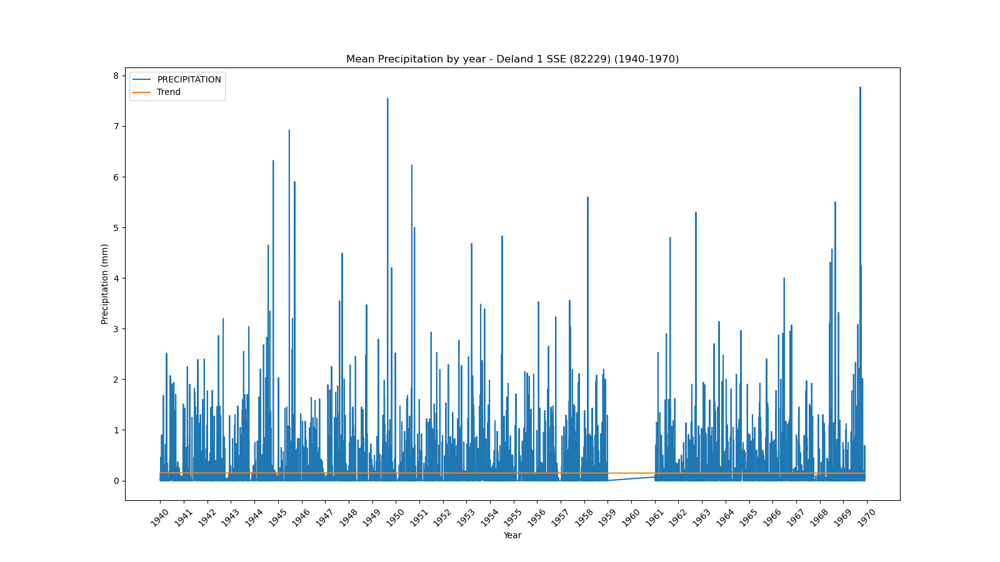
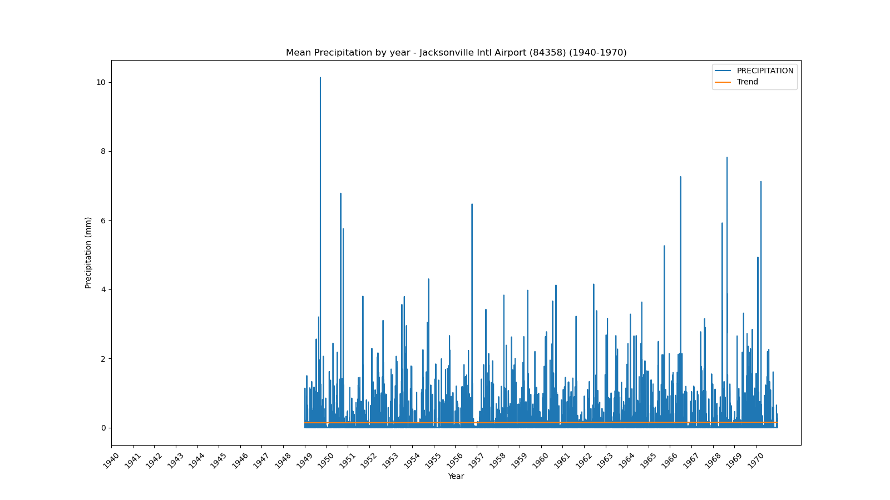
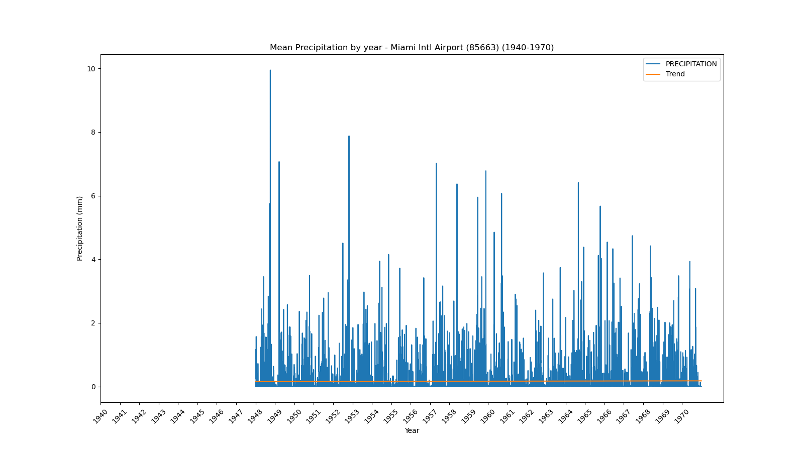
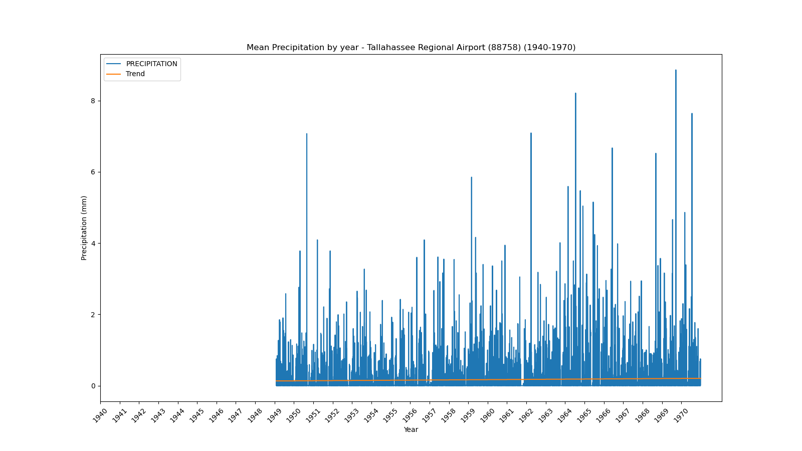

<!DOCTYPE html>
<html>
<head>
    
    <meta http-equiv="content-type" content="text/html; charset=UTF-8" />
    
        <script>
            L_NO_TOUCH = false;
            L_DISABLE_3D = false;
        </script>
    
    <style>html, body {width: 100%;height: 100%;margin: 0;padding: 0;}</style>
    <style>#map {position:absolute;top:0;bottom:0;right:0;left:0;}</style>
    <script src="https://cdn.jsdelivr.net/npm/leaflet@1.9.3/dist/leaflet.js"></script>
    <script src="https://code.jquery.com/jquery-1.12.4.min.js"></script>
    <script src="https://cdn.jsdelivr.net/npm/bootstrap@5.2.2/dist/js/bootstrap.bundle.min.js"></script>
    <script src="https://cdnjs.cloudflare.com/ajax/libs/Leaflet.awesome-markers/2.0.2/leaflet.awesome-markers.js"></script>
    <link rel="stylesheet" href="https://cdn.jsdelivr.net/npm/leaflet@1.9.3/dist/leaflet.css"/>
    <link rel="stylesheet" href="https://cdn.jsdelivr.net/npm/bootstrap@5.2.2/dist/css/bootstrap.min.css"/>
    <link rel="stylesheet" href="https://netdna.bootstrapcdn.com/bootstrap/3.0.0/css/bootstrap.min.css"/>
    <link rel="stylesheet" href="https://cdn.jsdelivr.net/npm/@fortawesome/fontawesome-free@6.2.0/css/all.min.css"/>
    <link rel="stylesheet" href="https://cdnjs.cloudflare.com/ajax/libs/Leaflet.awesome-markers/2.0.2/leaflet.awesome-markers.css"/>
    <link rel="stylesheet" href="https://cdn.jsdelivr.net/gh/python-visualization/folium/folium/templates/leaflet.awesome.rotate.min.css"/>
    
            <meta name="viewport" content="width=device-width,
                initial-scale=1.0, maximum-scale=1.0, user-scalable=no" />
            <style>
                #map_cac662b9aeba1bc123f49a6af2bed6dd {
                    position: relative;
                    width: 100.0%;
                    height: 100.0%;
                    left: 0.0%;
                    top: 0.0%;
                }
                .leaflet-container { font-size: 1rem; }
            </style>
        
</head>
<body>
    
    
            <div class="folium-map" id="map_cac662b9aeba1bc123f49a6af2bed6dd" ></div>
        
</body>
<script>
    
    
            var map_cac662b9aeba1bc123f49a6af2bed6dd = L.map(
                "map_cac662b9aeba1bc123f49a6af2bed6dd",
                {
                    center: [28.0, -82.5],
                    crs: L.CRS.EPSG3857,
                    zoom: 7,
                    zoomControl: false,
                    preferCanvas: false,
                }
            );

            

        
    
            var tile_layer_531fd373209f2bc1156ae427ffbcec42 = L.tileLayer(
                "https://cartodb-basemaps-{s}.global.ssl.fastly.net/dark_all/{z}/{x}/{y}.png",
                {"attribution": "\u0026copy; \u003ca target=\"_blank\" href=\"http://www.openstreetmap.org/copyright\"\u003eOpenStreetMap\u003c/a\u003e contributors \u0026copy; \u003ca target=\"_blank\" href=\"http://cartodb.com/attributions\"\u003eCartoDB\u003c/a\u003e, CartoDB \u003ca target=\"_blank\" href =\"http://cartodb.com/attributions\"\u003eattributions\u003c/a\u003e", "detectRetina": false, "maxNativeZoom": 18, "maxZoom": 18, "minZoom": 7, "noWrap": false, "opacity": 1, "subdomains": "abc", "tms": false}
            ).addTo(map_cac662b9aeba1bc123f49a6af2bed6dd);
        
    
            var marker_e5e341765b083aa7d3c2729f0aa7509f = L.marker(
                [29.72, -85.03],
                {}
            ).addTo(map_cac662b9aeba1bc123f49a6af2bed6dd);
        
    
            var icon_a2164391de595eff2172cb7404377618 = L.AwesomeMarkers.icon(
                {"extraClasses": "fa-rotate-0", "icon": "info-sign", "iconColor": "white", "markerColor": "lightgreen", "prefix": "glyphicon"}
            );
            marker_e5e341765b083aa7d3c2729f0aa7509f.setIcon(icon_a2164391de595eff2172cb7404377618);
        
    
        var popup_044ff3888e44047f981e896de225a9b9 = L.popup({"maxWidth": 1000, "minWidth": 500});

        
            
                var html_be8d14daa1152132738fdc97627f3307 = $(`<div id="html_be8d14daa1152132738fdc97627f3307" style="width: 100.0%; height: 100.0%;"><b>Apalachicola Airport (80211)</b><br>lat: 29.72, lon: -85.03<br><a href='../../static/img/plots/timeseries/precip_daily/80211_1940-1970.png' target='_BLANK'></a></div>`)[0];
                popup_044ff3888e44047f981e896de225a9b9.setContent(html_be8d14daa1152132738fdc97627f3307);
            
        

        marker_e5e341765b083aa7d3c2729f0aa7509f.bindPopup(popup_044ff3888e44047f981e896de225a9b9)
        ;

        
    
    
            var marker_76c96dc3ab962622efe8ebfdc9612373 = L.marker(
                [27.22, -81.86],
                {}
            ).addTo(map_cac662b9aeba1bc123f49a6af2bed6dd);
        
    
            var icon_46adbfa0a520b5b35ad30a96690c3ec6 = L.AwesomeMarkers.icon(
                {"extraClasses": "fa-rotate-0", "icon": "info-sign", "iconColor": "white", "markerColor": "lightgreen", "prefix": "glyphicon"}
            );
            marker_76c96dc3ab962622efe8ebfdc9612373.setIcon(icon_46adbfa0a520b5b35ad30a96690c3ec6);
        
    
        var popup_1984185951691db212981447f1656543 = L.popup({"maxWidth": 1000, "minWidth": 500});

        
            
                var html_24098eec7311fdcb225bbc91d531b4fe = $(`<div id="html_24098eec7311fdcb225bbc91d531b4fe" style="width: 100.0%; height: 100.0%;"><b>Arcadia (80228)</b><br>lat: 27.22, lon: -81.86<br><a href='../../static/img/plots/timeseries/precip_daily/80228_1940-1970.png' target='_BLANK'></a></div>`)[0];
                popup_1984185951691db212981447f1656543.setContent(html_24098eec7311fdcb225bbc91d531b4fe);
            
        

        marker_76c96dc3ab962622efe8ebfdc9612373.bindPopup(popup_1984185951691db212981447f1656543)
        ;

        
    
    
            var marker_04718c38570812b38053dfef3d070eeb = L.marker(
                [27.18, -81.35],
                {}
            ).addTo(map_cac662b9aeba1bc123f49a6af2bed6dd);
        
    
            var icon_588e55c16f838d4c7698e3209c1e3bed = L.AwesomeMarkers.icon(
                {"extraClasses": "fa-rotate-0", "icon": "info-sign", "iconColor": "white", "markerColor": "orange", "prefix": "glyphicon"}
            );
            marker_04718c38570812b38053dfef3d070eeb.setIcon(icon_588e55c16f838d4c7698e3209c1e3bed);
        
    
        var popup_45bc711100e8c434de35cf9d114df329 = L.popup({"maxWidth": 1000, "minWidth": 500});

        
            
                var html_de10ea0ea7446cec1fdb7ba816077b86 = $(`<div id="html_de10ea0ea7446cec1fdb7ba816077b86" style="width: 100.0%; height: 100.0%;"><b>Archbold Bio Station (80236)</b><br>lat: 27.18, lon: -81.35<br><a href='../../static/img/plots/timeseries/precip_daily/80236_1940-1970.png' target='_BLANK'></a></div>`)[0];
                popup_45bc711100e8c434de35cf9d114df329.setContent(html_de10ea0ea7446cec1fdb7ba816077b86);
            
        

        marker_04718c38570812b38053dfef3d070eeb.bindPopup(popup_45bc711100e8c434de35cf9d114df329)
        ;

        
    
    
            var marker_21bcf013357f0cae144511e20c6f8299 = L.marker(
                [27.59, -81.53],
                {}
            ).addTo(map_cac662b9aeba1bc123f49a6af2bed6dd);
        
    
            var icon_2592493a7a17a3c67d285a9104d5516d = L.AwesomeMarkers.icon(
                {"extraClasses": "fa-rotate-0", "icon": "info-sign", "iconColor": "white", "markerColor": "orange", "prefix": "glyphicon"}
            );
            marker_21bcf013357f0cae144511e20c6f8299.setIcon(icon_2592493a7a17a3c67d285a9104d5516d);
        
    
        var popup_91f13b9e4dee81af8b3a74f39c962219 = L.popup({"maxWidth": 1000, "minWidth": 500});

        
            
                var html_355431f1a8bd7a9ed981b91b75beb691 = $(`<div id="html_355431f1a8bd7a9ed981b91b75beb691" style="width: 100.0%; height: 100.0%;"><b>Avon Park 2 W (80369)</b><br>lat: 27.59, lon: -81.53<br><a href='../../static/img/plots/timeseries/precip_daily/80369_1940-1970.png' target='_BLANK'></a></div>`)[0];
                popup_91f13b9e4dee81af8b3a74f39c962219.setContent(html_355431f1a8bd7a9ed981b91b75beb691);
            
        

        marker_21bcf013357f0cae144511e20c6f8299.bindPopup(popup_91f13b9e4dee81af8b3a74f39c962219)
        ;

        
    
    
            var marker_80f5817343a120859f52fc61a28aca3e = L.marker(
                [27.95, -81.79],
                {}
            ).addTo(map_cac662b9aeba1bc123f49a6af2bed6dd);
        
    
            var icon_6ceeb86b837c030d41358c93ddd9f60b = L.AwesomeMarkers.icon(
                {"extraClasses": "fa-rotate-0", "icon": "info-sign", "iconColor": "white", "markerColor": "orange", "prefix": "glyphicon"}
            );
            marker_80f5817343a120859f52fc61a28aca3e.setIcon(icon_6ceeb86b837c030d41358c93ddd9f60b);
        
    
        var popup_9e6e21e8950207317dfb1511423e95b7 = L.popup({"maxWidth": 1000, "minWidth": 500});

        
            
                var html_1965ff42b2feb4ccde738d3f29246fd6 = $(`<div id="html_1965ff42b2feb4ccde738d3f29246fd6" style="width: 100.0%; height: 100.0%;"><b>Bartow (80478)</b><br>lat: 27.95, lon: -81.79<br><a href='../../static/img/plots/timeseries/precip_daily/80478_1940-1970.png' target='_BLANK'></a></div>`)[0];
                popup_9e6e21e8950207317dfb1511423e95b7.setContent(html_1965ff42b2feb4ccde738d3f29246fd6);
            
        

        marker_80f5817343a120859f52fc61a28aca3e.bindPopup(popup_9e6e21e8950207317dfb1511423e95b7)
        ;

        
    
    
            var marker_4c862e7a01db4614b7e8278fb5c4b0f8 = L.marker(
                [26.7, -80.66],
                {}
            ).addTo(map_cac662b9aeba1bc123f49a6af2bed6dd);
        
    
            var icon_e300d0144928f6d34fa64b680a8b93a2 = L.AwesomeMarkers.icon(
                {"extraClasses": "fa-rotate-0", "icon": "info-sign", "iconColor": "white", "markerColor": "lightgreen", "prefix": "glyphicon"}
            );
            marker_4c862e7a01db4614b7e8278fb5c4b0f8.setIcon(icon_e300d0144928f6d34fa64b680a8b93a2);
        
    
        var popup_a8887845f20d324732468af1a7c36906 = L.popup({"maxWidth": 1000, "minWidth": 500});

        
            
                var html_612c708aa9ac67d5d802722b01dc6302 = $(`<div id="html_612c708aa9ac67d5d802722b01dc6302" style="width: 100.0%; height: 100.0%;"><b>Belle Glade Airport (80611)</b><br>lat: 26.7, lon: -80.66<br><a href='../../static/img/plots/timeseries/precip_daily/80611_1940-1970.png' target='_BLANK'></a></div>`)[0];
                popup_a8887845f20d324732468af1a7c36906.setContent(html_612c708aa9ac67d5d802722b01dc6302);
            
        

        marker_4c862e7a01db4614b7e8278fb5c4b0f8.bindPopup(popup_a8887845f20d324732468af1a7c36906)
        ;

        
    
    
            var marker_dac195707deeddc938c148ea08ad3b2b = L.marker(
                [27.5, -82.57],
                {}
            ).addTo(map_cac662b9aeba1bc123f49a6af2bed6dd);
        
    
            var icon_ca35cd83f29b9e01a85377244f6b2d0c = L.AwesomeMarkers.icon(
                {"extraClasses": "fa-rotate-0", "icon": "info-sign", "iconColor": "white", "markerColor": "lightgreen", "prefix": "glyphicon"}
            );
            marker_dac195707deeddc938c148ea08ad3b2b.setIcon(icon_ca35cd83f29b9e01a85377244f6b2d0c);
        
    
        var popup_95b0412ad1f249a40f4ce593009e5258 = L.popup({"maxWidth": 1000, "minWidth": 500});

        
            
                var html_e1bd544be0b5e0923693ee51b6da0f1b = $(`<div id="html_e1bd544be0b5e0923693ee51b6da0f1b" style="width: 100.0%; height: 100.0%;"><b>Bradenton 5 ESE (80945)</b><br>lat: 27.5, lon: -82.57<br><a href='../../static/img/plots/timeseries/precip_daily/80945_1940-1970.png' target='_BLANK'></a></div>`)[0];
                popup_95b0412ad1f249a40f4ce593009e5258.setContent(html_e1bd544be0b5e0923693ee51b6da0f1b);
            
        

        marker_dac195707deeddc938c148ea08ad3b2b.bindPopup(popup_95b0412ad1f249a40f4ce593009e5258)
        ;

        
    
    
            var marker_1011ba00f9c49b447d85f7d73d6a4c9f = L.marker(
                [28.62, -82.37],
                {}
            ).addTo(map_cac662b9aeba1bc123f49a6af2bed6dd);
        
    
            var icon_0b5ca7805442c97f0709152cacbd1073 = L.AwesomeMarkers.icon(
                {"extraClasses": "fa-rotate-0", "icon": "info-sign", "iconColor": "white", "markerColor": "orange", "prefix": "glyphicon"}
            );
            marker_1011ba00f9c49b447d85f7d73d6a4c9f.setIcon(icon_0b5ca7805442c97f0709152cacbd1073);
        
    
        var popup_5017f46550898510215d08ca3e8cce1b = L.popup({"maxWidth": 1000, "minWidth": 500});

        
            
                var html_575ccf8c21fafa375dcf513f823be921 = $(`<div id="html_575ccf8c21fafa375dcf513f823be921" style="width: 100.0%; height: 100.0%;"><b>Chinsegut Hill (81046)</b><br>lat: 28.62, lon: -82.37<br><a href='../../static/img/plots/timeseries/precip_daily/81046_1940-1970.png' target='_BLANK'></a></div>`)[0];
                popup_5017f46550898510215d08ca3e8cce1b.setContent(html_575ccf8c21fafa375dcf513f823be921);
            
        

        marker_1011ba00f9c49b447d85f7d73d6a4c9f.bindPopup(popup_5017f46550898510215d08ca3e8cce1b)
        ;

        
    
    
            var marker_0bff9fee672f82e8042f0467a29e4c42 = L.marker(
                [28.66, -82.11],
                {}
            ).addTo(map_cac662b9aeba1bc123f49a6af2bed6dd);
        
    
            var icon_a04ebcc172a0d775d5ec995b734cb5f5 = L.AwesomeMarkers.icon(
                {"extraClasses": "fa-rotate-0", "icon": "info-sign", "iconColor": "white", "markerColor": "orange", "prefix": "glyphicon"}
            );
            marker_0bff9fee672f82e8042f0467a29e4c42.setIcon(icon_a04ebcc172a0d775d5ec995b734cb5f5);
        
    
        var popup_d7b20c2f6473aa80f33b066f53254985 = L.popup({"maxWidth": 1000, "minWidth": 500});

        
            
                var html_880375cbeee6a1ec060504c7acfa9330 = $(`<div id="html_880375cbeee6a1ec060504c7acfa9330" style="width: 100.0%; height: 100.0%;"><b>Bushnell 1 E (81163)</b><br>lat: 28.66, lon: -82.11<br><a href='../../static/img/plots/timeseries/precip_daily/81163_1940-1970.png' target='_BLANK'></a></div>`)[0];
                popup_d7b20c2f6473aa80f33b066f53254985.setContent(html_880375cbeee6a1ec060504c7acfa9330);
            
        

        marker_0bff9fee672f82e8042f0467a29e4c42.bindPopup(popup_d7b20c2f6473aa80f33b066f53254985)
        ;

        
    
    
            var marker_1ffa76b9c0545030d52d445be6135898 = L.marker(
                [26.86, -80.63],
                {}
            ).addTo(map_cac662b9aeba1bc123f49a6af2bed6dd);
        
    
            var icon_7d22085c9327f155ac59cabea2b4add2 = L.AwesomeMarkers.icon(
                {"extraClasses": "fa-rotate-0", "icon": "info-sign", "iconColor": "white", "markerColor": "orange", "prefix": "glyphicon"}
            );
            marker_1ffa76b9c0545030d52d445be6135898.setIcon(icon_7d22085c9327f155ac59cabea2b4add2);
        
    
        var popup_af27b8cc00205312816dec2c3dede084 = L.popup({"maxWidth": 1000, "minWidth": 500});

        
            
                var html_e42377061922e1ce49f7f09101cb9021 = $(`<div id="html_e42377061922e1ce49f7f09101cb9021" style="width: 100.0%; height: 100.0%;"><b>Canal Point (81276)</b><br>lat: 26.86, lon: -80.63<br><a href='../../static/img/plots/timeseries/precip_daily/81276_1940-1970.png' target='_BLANK'></a></div>`)[0];
                popup_af27b8cc00205312816dec2c3dede084.setContent(html_e42377061922e1ce49f7f09101cb9021);
            
        

        marker_1ffa76b9c0545030d52d445be6135898.bindPopup(popup_af27b8cc00205312816dec2c3dede084)
        ;

        
    
    
            var marker_98f748f32aefc8ae9c35a56c1fdc9ed5 = L.marker(
                [30.78, -85.54],
                {}
            ).addTo(map_cac662b9aeba1bc123f49a6af2bed6dd);
        
    
            var icon_d953aece5fffea020066d2c1fbaab927 = L.AwesomeMarkers.icon(
                {"extraClasses": "fa-rotate-0", "icon": "info-sign", "iconColor": "white", "markerColor": "orange", "prefix": "glyphicon"}
            );
            marker_98f748f32aefc8ae9c35a56c1fdc9ed5.setIcon(icon_d953aece5fffea020066d2c1fbaab927);
        
    
        var popup_ed5e2fba6346290f0bac28a7a81e69dd = L.popup({"maxWidth": 1000, "minWidth": 500});

        
            
                var html_484de3d68ad3e7d9908e1ad6c7e9e843 = $(`<div id="html_484de3d68ad3e7d9908e1ad6c7e9e843" style="width: 100.0%; height: 100.0%;"><b>Chipley (81544)</b><br>lat: 30.78, lon: -85.54<br><a href='../../static/img/plots/timeseries/precip_daily/81544_1940-1970.png' target='_BLANK'></a></div>`)[0];
                popup_ed5e2fba6346290f0bac28a7a81e69dd.setContent(html_484de3d68ad3e7d9908e1ad6c7e9e843);
            
        

        marker_98f748f32aefc8ae9c35a56c1fdc9ed5.bindPopup(popup_ed5e2fba6346290f0bac28a7a81e69dd)
        ;

        
    
    
            var marker_5c9e946c128633fc74fc4260bd70655a = L.marker(
                [28.56, -81.77],
                {}
            ).addTo(map_cac662b9aeba1bc123f49a6af2bed6dd);
        
    
            var icon_bd11186457e414a8f58e3c9eedd885ca = L.AwesomeMarkers.icon(
                {"extraClasses": "fa-rotate-0", "icon": "info-sign", "iconColor": "white", "markerColor": "lightgreen", "prefix": "glyphicon"}
            );
            marker_5c9e946c128633fc74fc4260bd70655a.setIcon(icon_bd11186457e414a8f58e3c9eedd885ca);
        
    
        var popup_348dae49ccb98bfee6b528481e5e3e3c = L.popup({"maxWidth": 1000, "minWidth": 500});

        
            
                var html_50a47f3d68d6153901f1cacb29793778 = $(`<div id="html_50a47f3d68d6153901f1cacb29793778" style="width: 100.0%; height: 100.0%;"><b>Clermont 9 S (81641)</b><br>lat: 28.56, lon: -81.77<br><a href='../../static/img/plots/timeseries/precip_daily/81641_1940-1970.png' target='_BLANK'></a></div>`)[0];
                popup_348dae49ccb98bfee6b528481e5e3e3c.setContent(html_50a47f3d68d6153901f1cacb29793778);
            
        

        marker_5c9e946c128633fc74fc4260bd70655a.bindPopup(popup_348dae49ccb98bfee6b528481e5e3e3c)
        ;

        
    
    
            var marker_e41a07b1dde01a45086ff8c7f7ccc55a = L.marker(
                [29.43, -81.51],
                {}
            ).addTo(map_cac662b9aeba1bc123f49a6af2bed6dd);
        
    
            var icon_a3ad51572076ba795f53a462321d0d69 = L.AwesomeMarkers.icon(
                {"extraClasses": "fa-rotate-0", "icon": "info-sign", "iconColor": "white", "markerColor": "orange", "prefix": "glyphicon"}
            );
            marker_e41a07b1dde01a45086ff8c7f7ccc55a.setIcon(icon_a3ad51572076ba795f53a462321d0d69);
        
    
        var popup_dc9411f1526915d6f5344d78f12b2ead = L.popup({"maxWidth": 1000, "minWidth": 500});

        
            
                var html_379dd0033cf839da10f3301e6eda38c5 = $(`<div id="html_379dd0033cf839da10f3301e6eda38c5" style="width: 100.0%; height: 100.0%;"><b>Crescent City (81978)</b><br>lat: 29.43, lon: -81.51<br><a href='../../static/img/plots/timeseries/precip_daily/81978_1940-1970.png' target='_BLANK'></a></div>`)[0];
                popup_dc9411f1526915d6f5344d78f12b2ead.setContent(html_379dd0033cf839da10f3301e6eda38c5);
            
        

        marker_e41a07b1dde01a45086ff8c7f7ccc55a.bindPopup(popup_dc9411f1526915d6f5344d78f12b2ead)
        ;

        
    
    
            var marker_0be8ece92d5085bede36b2ed98eccd63 = L.marker(
                [30.78, -86.52],
                {}
            ).addTo(map_cac662b9aeba1bc123f49a6af2bed6dd);
        
    
            var icon_7af18195c59abbb0d0e7cfb217cf90f2 = L.AwesomeMarkers.icon(
                {"extraClasses": "fa-rotate-0", "icon": "info-sign", "iconColor": "white", "markerColor": "orange", "prefix": "glyphicon"}
            );
            marker_0be8ece92d5085bede36b2ed98eccd63.setIcon(icon_7af18195c59abbb0d0e7cfb217cf90f2);
        
    
        var popup_e8ac367f842e0bfc579c1cb62b5e8299 = L.popup({"maxWidth": 1000, "minWidth": 500});

        
            
                var html_6b6711fb1ec58b019740728386908008 = $(`<div id="html_6b6711fb1ec58b019740728386908008" style="width: 100.0%; height: 100.0%;"><b>Crestview Bob Sikes Airport (81986)</b><br>lat: 30.78, lon: -86.52<br><a href='../../static/img/plots/timeseries/precip_daily/81986_1940-1970.png' target='_BLANK'></a></div>`)[0];
                popup_e8ac367f842e0bfc579c1cb62b5e8299.setContent(html_6b6711fb1ec58b019740728386908008);
            
        

        marker_0be8ece92d5085bede36b2ed98eccd63.bindPopup(popup_e8ac367f842e0bfc579c1cb62b5e8299)
        ;

        
    
    
            var marker_7cf64b9057f8ca27bd8ba565b9986c1e = L.marker(
                [29.63, -83.13],
                {}
            ).addTo(map_cac662b9aeba1bc123f49a6af2bed6dd);
        
    
            var icon_76747f0e928ad642866dde2fb78f9b3a = L.AwesomeMarkers.icon(
                {"extraClasses": "fa-rotate-0", "icon": "info-sign", "iconColor": "white", "markerColor": "lightgreen", "prefix": "glyphicon"}
            );
            marker_7cf64b9057f8ca27bd8ba565b9986c1e.setIcon(icon_76747f0e928ad642866dde2fb78f9b3a);
        
    
        var popup_46879252489be2549e93dce6e274c0ca = L.popup({"maxWidth": 1000, "minWidth": 500});

        
            
                var html_ead05ba594b24b20e777cd0feb447299 = $(`<div id="html_ead05ba594b24b20e777cd0feb447299" style="width: 100.0%; height: 100.0%;"><b>Cross City 1 E (82008)</b><br>lat: 29.63, lon: -83.13<br><a href='../../static/img/plots/timeseries/precip_daily/82008_1940-1970.png' target='_BLANK'></a></div>`)[0];
                popup_46879252489be2549e93dce6e274c0ca.setContent(html_ead05ba594b24b20e777cd0feb447299);
            
        

        marker_7cf64b9057f8ca27bd8ba565b9986c1e.bindPopup(popup_46879252489be2549e93dce6e274c0ca)
        ;

        
    
    
            var marker_c0451d370011087bdcc311dc7a2bb499 = L.marker(
                [29.16, -81.0],
                {}
            ).addTo(map_cac662b9aeba1bc123f49a6af2bed6dd);
        
    
            var icon_aa33305d0a23862c93230f6a81307670 = L.AwesomeMarkers.icon(
                {"extraClasses": "fa-rotate-0", "icon": "info-sign", "iconColor": "white", "markerColor": "lightgreen", "prefix": "glyphicon"}
            );
            marker_c0451d370011087bdcc311dc7a2bb499.setIcon(icon_aa33305d0a23862c93230f6a81307670);
        
    
        var popup_f0ad15628b51d19fd50cedd692b38c56 = L.popup({"maxWidth": 1000, "minWidth": 500});

        
            
                var html_5633c1f8f1db0bcb95419a75b4c05c92 = $(`<div id="html_5633c1f8f1db0bcb95419a75b4c05c92" style="width: 100.0%; height: 100.0%;"><b>Daytona Beach (82150)</b><br>lat: 29.16, lon: -81<br><a href='../../static/img/plots/timeseries/precip_daily/82150_1940-1970.png' target='_BLANK'></a></div>`)[0];
                popup_f0ad15628b51d19fd50cedd692b38c56.setContent(html_5633c1f8f1db0bcb95419a75b4c05c92);
            
        

        marker_c0451d370011087bdcc311dc7a2bb499.bindPopup(popup_f0ad15628b51d19fd50cedd692b38c56)
        ;

        
    
    
            var marker_0f9a47a0cd09617decf4f0415ad3166f = L.marker(
                [29.18, -81.06],
                {}
            ).addTo(map_cac662b9aeba1bc123f49a6af2bed6dd);
        
    
            var icon_30fd3f29c5970014262fc737bc8fcb64 = L.AwesomeMarkers.icon(
                {"extraClasses": "fa-rotate-0", "icon": "info-sign", "iconColor": "white", "markerColor": "orange", "prefix": "glyphicon"}
            );
            marker_0f9a47a0cd09617decf4f0415ad3166f.setIcon(icon_30fd3f29c5970014262fc737bc8fcb64);
        
    
        var popup_96eac793055a34c1d290ec1304d0ae44 = L.popup({"maxWidth": 1000, "minWidth": 500});

        
            
                var html_ca34f2b80912bfd01d18e711ac908369 = $(`<div id="html_ca34f2b80912bfd01d18e711ac908369" style="width: 100.0%; height: 100.0%;"><b>Daytona Beach Intl Airport (82158)</b><br>lat: 29.18, lon: -81.06<br><a href='../../static/img/plots/timeseries/precip_daily/82158_1940-1970.png' target='_BLANK'></a></div>`)[0];
                popup_96eac793055a34c1d290ec1304d0ae44.setContent(html_ca34f2b80912bfd01d18e711ac908369);
            
        

        marker_0f9a47a0cd09617decf4f0415ad3166f.bindPopup(popup_96eac793055a34c1d290ec1304d0ae44)
        ;

        
    
    
            var marker_1efbbdac39034938199e20962fa744fd = L.marker(
                [30.72, -86.12],
                {}
            ).addTo(map_cac662b9aeba1bc123f49a6af2bed6dd);
        
    
            var icon_44e830d49b11f2c078991d2202d6bc30 = L.AwesomeMarkers.icon(
                {"extraClasses": "fa-rotate-0", "icon": "info-sign", "iconColor": "white", "markerColor": "orange", "prefix": "glyphicon"}
            );
            marker_1efbbdac39034938199e20962fa744fd.setIcon(icon_44e830d49b11f2c078991d2202d6bc30);
        
    
        var popup_c721573cf53cc18f88e24010336ccf72 = L.popup({"maxWidth": 1000, "minWidth": 500});

        
            
                var html_2fe3e52fb8d688a1f0b0f9967bb4a1db = $(`<div id="html_2fe3e52fb8d688a1f0b0f9967bb4a1db" style="width: 100.0%; height: 100.0%;"><b>De Funiak Springs 1 E (82220)</b><br>lat: 30.72, lon: -86.12<br><a href='../../static/img/plots/timeseries/precip_daily/82220_1940-1970.png' target='_BLANK'></a></div>`)[0];
                popup_c721573cf53cc18f88e24010336ccf72.setContent(html_2fe3e52fb8d688a1f0b0f9967bb4a1db);
            
        

        marker_1efbbdac39034938199e20962fa744fd.bindPopup(popup_c721573cf53cc18f88e24010336ccf72)
        ;

        
    
    
            var marker_1068e67f905e2323e212cbc95476282b = L.marker(
                [29.03, -81.3],
                {}
            ).addTo(map_cac662b9aeba1bc123f49a6af2bed6dd);
        
    
            var icon_60cd077261b59fc1a786ea7e925df6fc = L.AwesomeMarkers.icon(
                {"extraClasses": "fa-rotate-0", "icon": "info-sign", "iconColor": "white", "markerColor": "orange", "prefix": "glyphicon"}
            );
            marker_1068e67f905e2323e212cbc95476282b.setIcon(icon_60cd077261b59fc1a786ea7e925df6fc);
        
    
        var popup_b61348340ade4668b9d81ca0dd42ff71 = L.popup({"maxWidth": 1000, "minWidth": 500});

        
            
                var html_7e327b44cfa896d486ce6ae73d3dbc22 = $(`<div id="html_7e327b44cfa896d486ce6ae73d3dbc22" style="width: 100.0%; height: 100.0%;"><b>Deland 1 SSE (82229)</b><br>lat: 29.03, lon: -81.3<br><a href='../../static/img/plots/timeseries/precip_daily/82229_1940-1970.png' target='_BLANK'></a></div>`)[0];
                popup_b61348340ade4668b9d81ca0dd42ff71.setContent(html_7e327b44cfa896d486ce6ae73d3dbc22);
            
        

        marker_1068e67f905e2323e212cbc95476282b.bindPopup(popup_b61348340ade4668b9d81ca0dd42ff71)
        ;

        
    
    
            var marker_a7275ab260d91c1e547d048ccee96ec2 = L.marker(
                [30.71, -85.72],
                {}
            ).addTo(map_cac662b9aeba1bc123f49a6af2bed6dd);
        
    
            var icon_5309e91d0ee3941ac56e40e48b22697f = L.AwesomeMarkers.icon(
                {"extraClasses": "fa-rotate-0", "icon": "info-sign", "iconColor": "white", "markerColor": "orange", "prefix": "glyphicon"}
            );
            marker_a7275ab260d91c1e547d048ccee96ec2.setIcon(icon_5309e91d0ee3941ac56e40e48b22697f);
        
    
        var popup_1bc877fb36663e3581d359088b6b89fd = L.popup({"maxWidth": 1000, "minWidth": 500});

        
            
                var html_a3937b9ee08f8d771e57a6eecf10d9c8 = $(`<div id="html_a3937b9ee08f8d771e57a6eecf10d9c8" style="width: 100.0%; height: 100.0%;"><b>Devils Garden (82298)</b><br>lat: 30.71, lon: -85.72<br><a href='../../static/img/plots/timeseries/precip_daily/82298_1940-1970.png' target='_BLANK'></a></div>`)[0];
                popup_1bc877fb36663e3581d359088b6b89fd.setContent(html_a3937b9ee08f8d771e57a6eecf10d9c8);
            
        

        marker_a7275ab260d91c1e547d048ccee96ec2.bindPopup(popup_1bc877fb36663e3581d359088b6b89fd)
        ;

        
    
    
            var marker_16eaa962e1c479865593d51cfe0cf780 = L.marker(
                [25.29, -80.89],
                {}
            ).addTo(map_cac662b9aeba1bc123f49a6af2bed6dd);
        
    
            var icon_a6505a5ba319b6de12c9322cea539444 = L.AwesomeMarkers.icon(
                {"extraClasses": "fa-rotate-0", "icon": "info-sign", "iconColor": "white", "markerColor": "lightgreen", "prefix": "glyphicon"}
            );
            marker_16eaa962e1c479865593d51cfe0cf780.setIcon(icon_a6505a5ba319b6de12c9322cea539444);
        
    
        var popup_ab01c750cb79aa9940d83c926e459482 = L.popup({"maxWidth": 1000, "minWidth": 500});

        
            
                var html_e3b771155856d280ee17fb161ebdf12f = $(`<div id="html_e3b771155856d280ee17fb161ebdf12f" style="width: 100.0%; height: 100.0%;"><b>Everglades (82850)</b><br>lat: 25.29, lon: -80.89<br><a href='../../static/img/plots/timeseries/precip_daily/82850_1940-1970.png' target='_BLANK'></a></div>`)[0];
                popup_ab01c750cb79aa9940d83c926e459482.setContent(html_e3b771155856d280ee17fb161ebdf12f);
            
        

        marker_16eaa962e1c479865593d51cfe0cf780.bindPopup(popup_ab01c750cb79aa9940d83c926e459482)
        ;

        
    
    
            var marker_46d91c7af3c71f791d5425112d710e7a = L.marker(
                [29.75, -81.54],
                {}
            ).addTo(map_cac662b9aeba1bc123f49a6af2bed6dd);
        
    
            var icon_e8701e1f4bebe1b0692518efa82f3a8c = L.AwesomeMarkers.icon(
                {"extraClasses": "fa-rotate-0", "icon": "info-sign", "iconColor": "white", "markerColor": "orange", "prefix": "glyphicon"}
            );
            marker_46d91c7af3c71f791d5425112d710e7a.setIcon(icon_e8701e1f4bebe1b0692518efa82f3a8c);
        
    
        var popup_203eacee3ee99d6b4cfe77f23f653c82 = L.popup({"maxWidth": 1000, "minWidth": 500});

        
            
                var html_0e5b715884020727c33a7cd83d8aa1c6 = $(`<div id="html_0e5b715884020727c33a7cd83d8aa1c6" style="width: 100.0%; height: 100.0%;"><b>Federal Point (82915)</b><br>lat: 29.75, lon: -81.54<br><a href='../../static/img/plots/timeseries/precip_daily/82915_1940-1970.png' target='_BLANK'></a></div>`)[0];
                popup_203eacee3ee99d6b4cfe77f23f653c82.setContent(html_0e5b715884020727c33a7cd83d8aa1c6);
            
        

        marker_46d91c7af3c71f791d5425112d710e7a.bindPopup(popup_203eacee3ee99d6b4cfe77f23f653c82)
        ;

        
    
    
            var marker_be61a0f7543096e50b722c73e04a7845 = L.marker(
                [30.62, -81.46],
                {}
            ).addTo(map_cac662b9aeba1bc123f49a6af2bed6dd);
        
    
            var icon_9f510604afdd3216d814fd2985df8772 = L.AwesomeMarkers.icon(
                {"extraClasses": "fa-rotate-0", "icon": "info-sign", "iconColor": "white", "markerColor": "lightgreen", "prefix": "glyphicon"}
            );
            marker_be61a0f7543096e50b722c73e04a7845.setIcon(icon_9f510604afdd3216d814fd2985df8772);
        
    
        var popup_c6a820e61865057b35464a4e191f2e4c = L.popup({"maxWidth": 1000, "minWidth": 500});

        
            
                var html_f53864cf079e9c75592ebf71d6f61e66 = $(`<div id="html_f53864cf079e9c75592ebf71d6f61e66" style="width: 100.0%; height: 100.0%;"><b>Fernandina Beach (82944)</b><br>lat: 30.62, lon: -81.46<br><a href='../../static/img/plots/timeseries/precip_daily/82944_1940-1970.png' target='_BLANK'></a></div>`)[0];
                popup_c6a820e61865057b35464a4e191f2e4c.setContent(html_f53864cf079e9c75592ebf71d6f61e66);
            
        

        marker_be61a0f7543096e50b722c73e04a7845.bindPopup(popup_c6a820e61865057b35464a4e191f2e4c)
        ;

        
    
    
            var marker_bca5fc1733aa131e381eca180549dd0b = L.marker(
                [25.14, -80.93],
                {}
            ).addTo(map_cac662b9aeba1bc123f49a6af2bed6dd);
        
    
            var icon_44ef752453213b2683d83337766d2ea2 = L.AwesomeMarkers.icon(
                {"extraClasses": "fa-rotate-0", "icon": "info-sign", "iconColor": "white", "markerColor": "lightgreen", "prefix": "glyphicon"}
            );
            marker_bca5fc1733aa131e381eca180549dd0b.setIcon(icon_44ef752453213b2683d83337766d2ea2);
        
    
        var popup_7149286807d77e49140e746419845202 = L.popup({"maxWidth": 1000, "minWidth": 500});

        
            
                var html_27b8903bcb707819b52a07c729a30d86 = $(`<div id="html_27b8903bcb707819b52a07c729a30d86" style="width: 100.0%; height: 100.0%;"><b>Flamingo Ranger Station (83020)</b><br>lat: 25.14, lon: -80.93<br><a href='../../static/img/plots/timeseries/precip_daily/83020_1940-1970.png' target='_BLANK'></a></div>`)[0];
                popup_7149286807d77e49140e746419845202.setContent(html_27b8903bcb707819b52a07c729a30d86);
            
        

        marker_bca5fc1733aa131e381eca180549dd0b.bindPopup(popup_7149286807d77e49140e746419845202)
        ;

        
    
    
            var marker_8d7f90fa260d045671c994752d8fb96c = L.marker(
                [27.53, -80.81],
                {}
            ).addTo(map_cac662b9aeba1bc123f49a6af2bed6dd);
        
    
            var icon_6785f4e8e4e2e8796dd77550f9439ad9 = L.AwesomeMarkers.icon(
                {"extraClasses": "fa-rotate-0", "icon": "info-sign", "iconColor": "white", "markerColor": "orange", "prefix": "glyphicon"}
            );
            marker_8d7f90fa260d045671c994752d8fb96c.setIcon(icon_6785f4e8e4e2e8796dd77550f9439ad9);
        
    
        var popup_8258517307a9d3c7f4480ffe64b5a0df = L.popup({"maxWidth": 1000, "minWidth": 500});

        
            
                var html_375ad8e19702640d74514842927a1b55 = $(`<div id="html_375ad8e19702640d74514842927a1b55" style="width: 100.0%; height: 100.0%;"><b>Fort Drum (83137)</b><br>lat: 27.53, lon: -80.81<br><a href='../../static/img/plots/timeseries/precip_daily/83137_1940-1970.png' target='_BLANK'></a></div>`)[0];
                popup_8258517307a9d3c7f4480ffe64b5a0df.setContent(html_375ad8e19702640d74514842927a1b55);
            
        

        marker_8d7f90fa260d045671c994752d8fb96c.bindPopup(popup_8258517307a9d3c7f4480ffe64b5a0df)
        ;

        
    
    
            var marker_45f52e42fef98f37f16ce95fc3a14422 = L.marker(
                [27.61, -81.94],
                {}
            ).addTo(map_cac662b9aeba1bc123f49a6af2bed6dd);
        
    
            var icon_9bfdc917eb85fa065b629d89c1a62696 = L.AwesomeMarkers.icon(
                {"extraClasses": "fa-rotate-0", "icon": "info-sign", "iconColor": "white", "markerColor": "orange", "prefix": "glyphicon"}
            );
            marker_45f52e42fef98f37f16ce95fc3a14422.setIcon(icon_9bfdc917eb85fa065b629d89c1a62696);
        
    
        var popup_23c13a4036bdf4d11ecf1423386eca5d = L.popup({"maxWidth": 1000, "minWidth": 500});

        
            
                var html_799931736ccf0cfce43fc44821567239 = $(`<div id="html_799931736ccf0cfce43fc44821567239" style="width: 100.0%; height: 100.0%;"><b>Fort Green 12 WSW (83153)</b><br>lat: 27.61, lon: -81.94<br><a href='../../static/img/plots/timeseries/precip_daily/83153_1940-1970.png' target='_BLANK'></a></div>`)[0];
                popup_23c13a4036bdf4d11ecf1423386eca5d.setContent(html_799931736ccf0cfce43fc44821567239);
            
        

        marker_45f52e42fef98f37f16ce95fc3a14422.bindPopup(popup_23c13a4036bdf4d11ecf1423386eca5d)
        ;

        
    
    
            var marker_0804daeb186a4d861b1f00be58b69e1e = L.marker(
                [26.07, -80.15],
                {}
            ).addTo(map_cac662b9aeba1bc123f49a6af2bed6dd);
        
    
            var icon_316a6c1b861d3be44f61ad0d6de7e25c = L.AwesomeMarkers.icon(
                {"extraClasses": "fa-rotate-0", "icon": "info-sign", "iconColor": "white", "markerColor": "lightgreen", "prefix": "glyphicon"}
            );
            marker_0804daeb186a4d861b1f00be58b69e1e.setIcon(icon_316a6c1b861d3be44f61ad0d6de7e25c);
        
    
        var popup_e1fd5fb1e9914b9f8dedde1d92ff818a = L.popup({"maxWidth": 1000, "minWidth": 500});

        
            
                var html_712d6b9a7587c4fb0ce15c6edd8a5578 = $(`<div id="html_712d6b9a7587c4fb0ce15c6edd8a5578" style="width: 100.0%; height: 100.0%;"><b>Ft Lauderdale (83163)</b><br>lat: 26.07, lon: -80.15<br><a href='../../static/img/plots/timeseries/precip_daily/83163_1940-1970.png' target='_BLANK'></a></div>`)[0];
                popup_e1fd5fb1e9914b9f8dedde1d92ff818a.setContent(html_712d6b9a7587c4fb0ce15c6edd8a5578);
            
        

        marker_0804daeb186a4d861b1f00be58b69e1e.bindPopup(popup_e1fd5fb1e9914b9f8dedde1d92ff818a)
        ;

        
    
    
            var marker_c04da98ecf0eb54a0433c7d024f04a58 = L.marker(
                [26.13, -80.11],
                {}
            ).addTo(map_cac662b9aeba1bc123f49a6af2bed6dd);
        
    
            var icon_7e04a5ce3093455a7d2150284b42a609 = L.AwesomeMarkers.icon(
                {"extraClasses": "fa-rotate-0", "icon": "info-sign", "iconColor": "white", "markerColor": "orange", "prefix": "glyphicon"}
            );
            marker_c04da98ecf0eb54a0433c7d024f04a58.setIcon(icon_7e04a5ce3093455a7d2150284b42a609);
        
    
        var popup_2968e12a18232654b0c6052bf0b00792 = L.popup({"maxWidth": 1000, "minWidth": 500});

        
            
                var html_9b2bacda730a2be345bb20978c383533 = $(`<div id="html_9b2bacda730a2be345bb20978c383533" style="width: 100.0%; height: 100.0%;"><b>Ft Lauderdale Beach (83168)</b><br>lat: 26.13, lon: -80.11<br><a href='../../static/img/plots/timeseries/precip_daily/83168_1940-1970.png' target='_BLANK'></a></div>`)[0];
                popup_2968e12a18232654b0c6052bf0b00792.setContent(html_9b2bacda730a2be345bb20978c383533);
            
        

        marker_c04da98ecf0eb54a0433c7d024f04a58.bindPopup(popup_2968e12a18232654b0c6052bf0b00792)
        ;

        
    
    
            var marker_6b9c799bf607b4d8d3d1932b95886080 = L.marker(
                [26.59, -81.87],
                {}
            ).addTo(map_cac662b9aeba1bc123f49a6af2bed6dd);
        
    
            var icon_d8d1e75bf84d390d4de31df9c98f4958 = L.AwesomeMarkers.icon(
                {"extraClasses": "fa-rotate-0", "icon": "info-sign", "iconColor": "white", "markerColor": "lightgreen", "prefix": "glyphicon"}
            );
            marker_6b9c799bf607b4d8d3d1932b95886080.setIcon(icon_d8d1e75bf84d390d4de31df9c98f4958);
        
    
        var popup_9c77c68c2e336426c54bbfbabf7b16d4 = L.popup({"maxWidth": 1000, "minWidth": 500});

        
            
                var html_f57a4dda7dfc853ab39e23ae78322164 = $(`<div id="html_f57a4dda7dfc853ab39e23ae78322164" style="width: 100.0%; height: 100.0%;"><b>Fort Myers Page Field Airport (83186)</b><br>lat: 26.59, lon: -81.87<br><a href='../../static/img/plots/timeseries/precip_daily/83186_1940-1970.png' target='_BLANK'></a></div>`)[0];
                popup_9c77c68c2e336426c54bbfbabf7b16d4.setContent(html_f57a4dda7dfc853ab39e23ae78322164);
            
        

        marker_6b9c799bf607b4d8d3d1932b95886080.bindPopup(popup_9c77c68c2e336426c54bbfbabf7b16d4)
        ;

        
    
    
            var marker_62aa586577fd9bbfb00a6fdcc7241a5b = L.marker(
                [27.44, -80.34],
                {}
            ).addTo(map_cac662b9aeba1bc123f49a6af2bed6dd);
        
    
            var icon_d9ca8fb31d0bee9f28afb755ea60fc07 = L.AwesomeMarkers.icon(
                {"extraClasses": "fa-rotate-0", "icon": "info-sign", "iconColor": "white", "markerColor": "orange", "prefix": "glyphicon"}
            );
            marker_62aa586577fd9bbfb00a6fdcc7241a5b.setIcon(icon_d9ca8fb31d0bee9f28afb755ea60fc07);
        
    
        var popup_de2d0bffa61f4cea978633c99ea957a7 = L.popup({"maxWidth": 1000, "minWidth": 500});

        
            
                var html_92873d366af9d4d2877944a80acbccb0 = $(`<div id="html_92873d366af9d4d2877944a80acbccb0" style="width: 100.0%; height: 100.0%;"><b>Fort Pierce (83207)</b><br>lat: 27.44, lon: -80.34<br><a href='../../static/img/plots/timeseries/precip_daily/83207_1940-1970.png' target='_BLANK'></a></div>`)[0];
                popup_de2d0bffa61f4cea978633c99ea957a7.setContent(html_92873d366af9d4d2877944a80acbccb0);
            
        

        marker_62aa586577fd9bbfb00a6fdcc7241a5b.bindPopup(popup_de2d0bffa61f4cea978633c99ea957a7)
        ;

        
    
    
            var marker_eaec1b9f67c2ed5b7318f13105a7d44e = L.marker(
                [29.69, -82.28],
                {}
            ).addTo(map_cac662b9aeba1bc123f49a6af2bed6dd);
        
    
            var icon_cf68f74707454c227da50a6c43adca80 = L.AwesomeMarkers.icon(
                {"extraClasses": "fa-rotate-0", "icon": "info-sign", "iconColor": "white", "markerColor": "lightgreen", "prefix": "glyphicon"}
            );
            marker_eaec1b9f67c2ed5b7318f13105a7d44e.setIcon(icon_cf68f74707454c227da50a6c43adca80);
        
    
        var popup_f11d71e056957089bb7d419bcfedda88 = L.popup({"maxWidth": 1000, "minWidth": 500});

        
            
                var html_11deaa598a2c4f1640ea80ae44e4488f = $(`<div id="html_11deaa598a2c4f1640ea80ae44e4488f" style="width: 100.0%; height: 100.0%;"><b>Gainesville Regional Airport (83326)</b><br>lat: 29.69, lon: -82.28<br><a href='../../static/img/plots/timeseries/precip_daily/83326_1940-1970.png' target='_BLANK'></a></div>`)[0];
                popup_f11d71e056957089bb7d419bcfedda88.setContent(html_11deaa598a2c4f1640ea80ae44e4488f);
            
        

        marker_eaec1b9f67c2ed5b7318f13105a7d44e.bindPopup(popup_f11d71e056957089bb7d419bcfedda88)
        ;

        
    
    
            var marker_b4f116d9027b853b5507df02e5d66e3c = L.marker(
                [30.28, -82.16],
                {}
            ).addTo(map_cac662b9aeba1bc123f49a6af2bed6dd);
        
    
            var icon_ff76264b61716125d72854e08abb268e = L.AwesomeMarkers.icon(
                {"extraClasses": "fa-rotate-0", "icon": "info-sign", "iconColor": "white", "markerColor": "lightgreen", "prefix": "glyphicon"}
            );
            marker_b4f116d9027b853b5507df02e5d66e3c.setIcon(icon_ff76264b61716125d72854e08abb268e);
        
    
        var popup_b883c82662d60db20ac81490973b0b28 = L.popup({"maxWidth": 1000, "minWidth": 500});

        
            
                var html_fefad318ce62297b0dc887992cd29163 = $(`<div id="html_fefad318ce62297b0dc887992cd29163" style="width: 100.0%; height: 100.0%;"><b>Glen St Mary 1 W (83470)</b><br>lat: 30.28, lon: -82.16<br><a href='../../static/img/plots/timeseries/precip_daily/83470_1940-1970.png' target='_BLANK'></a></div>`)[0];
                popup_b883c82662d60db20ac81490973b0b28.setContent(html_fefad318ce62297b0dc887992cd29163);
            
        

        marker_b4f116d9027b853b5507df02e5d66e3c.bindPopup(popup_b883c82662d60db20ac81490973b0b28)
        ;

        
    
    
            var marker_70d551f7e7dbb43fd1385a4cab057f46 = L.marker(
                [25.86, -80.28],
                {}
            ).addTo(map_cac662b9aeba1bc123f49a6af2bed6dd);
        
    
            var icon_08658bb2d742873966bf751b4dd0e4a3 = L.AwesomeMarkers.icon(
                {"extraClasses": "fa-rotate-0", "icon": "info-sign", "iconColor": "white", "markerColor": "lightgreen", "prefix": "glyphicon"}
            );
            marker_70d551f7e7dbb43fd1385a4cab057f46.setIcon(icon_08658bb2d742873966bf751b4dd0e4a3);
        
    
        var popup_55eb3e7a22233375a216ab187d119d93 = L.popup({"maxWidth": 1000, "minWidth": 500});

        
            
                var html_baf262ccf10863247b72a33bdd9724a3 = $(`<div id="html_baf262ccf10863247b72a33bdd9724a3" style="width: 100.0%; height: 100.0%;"><b>Hialeah (83909)</b><br>lat: 25.86, lon: -80.28<br><a href='../../static/img/plots/timeseries/precip_daily/83909_1940-1970.png' target='_BLANK'></a></div>`)[0];
                popup_55eb3e7a22233375a216ab187d119d93.setContent(html_baf262ccf10863247b72a33bdd9724a3);
            
        

        marker_70d551f7e7dbb43fd1385a4cab057f46.bindPopup(popup_55eb3e7a22233375a216ab187d119d93)
        ;

        
    
    
            var marker_c18bffb4a901be1696c0bc7dd03424da = L.marker(
                [29.83, -82.6],
                {}
            ).addTo(map_cac662b9aeba1bc123f49a6af2bed6dd);
        
    
            var icon_53ab89220936b0986cde3c22cd8c121f = L.AwesomeMarkers.icon(
                {"extraClasses": "fa-rotate-0", "icon": "info-sign", "iconColor": "white", "markerColor": "orange", "prefix": "glyphicon"}
            );
            marker_c18bffb4a901be1696c0bc7dd03424da.setIcon(icon_53ab89220936b0986cde3c22cd8c121f);
        
    
        var popup_5744c1c9f7322b7b576d3ec19538626c = L.popup({"maxWidth": 1000, "minWidth": 500});

        
            
                var html_cd844543714d04f2cdd752774c7761e8 = $(`<div id="html_cd844543714d04f2cdd752774c7761e8" style="width: 100.0%; height: 100.0%;"><b>High Springs (83956)</b><br>lat: 29.83, lon: -82.6<br><a href='../../static/img/plots/timeseries/precip_daily/83956_1940-1970.png' target='_BLANK'></a></div>`)[0];
                popup_5744c1c9f7322b7b576d3ec19538626c.setContent(html_cd844543714d04f2cdd752774c7761e8);
            
        

        marker_c18bffb4a901be1696c0bc7dd03424da.bindPopup(popup_5744c1c9f7322b7b576d3ec19538626c)
        ;

        
    
    
            var marker_f29143acb8ed1892b96d3ba38e82ae6d = L.marker(
                [28.14, -82.23],
                {}
            ).addTo(map_cac662b9aeba1bc123f49a6af2bed6dd);
        
    
            var icon_6c76457762bd5edc87d94d5248aafbcf = L.AwesomeMarkers.icon(
                {"extraClasses": "fa-rotate-0", "icon": "info-sign", "iconColor": "white", "markerColor": "lightgreen", "prefix": "glyphicon"}
            );
            marker_f29143acb8ed1892b96d3ba38e82ae6d.setIcon(icon_6c76457762bd5edc87d94d5248aafbcf);
        
    
        var popup_ad26232b02bac043a77316c882648fb4 = L.popup({"maxWidth": 1000, "minWidth": 500});

        
            
                var html_b226b03b66295949a77886add5e3e302 = $(`<div id="html_b226b03b66295949a77886add5e3e302" style="width: 100.0%; height: 100.0%;"><b>Hillsborough River State Park (83986)</b><br>lat: 28.14, lon: -82.23<br><a href='../../static/img/plots/timeseries/precip_daily/83986_1940-1970.png' target='_BLANK'></a></div>`)[0];
                popup_ad26232b02bac043a77316c882648fb4.setContent(html_b226b03b66295949a77886add5e3e302);
            
        

        marker_f29143acb8ed1892b96d3ba38e82ae6d.bindPopup(popup_ad26232b02bac043a77316c882648fb4)
        ;

        
    
    
            var marker_4148b5dc18932f676181e01aa50151ac = L.marker(
                [28.84, -82.34],
                {}
            ).addTo(map_cac662b9aeba1bc123f49a6af2bed6dd);
        
    
            var icon_1a8ccb0418bd1c627120112e1defaf0f = L.AwesomeMarkers.icon(
                {"extraClasses": "fa-rotate-0", "icon": "info-sign", "iconColor": "white", "markerColor": "orange", "prefix": "glyphicon"}
            );
            marker_4148b5dc18932f676181e01aa50151ac.setIcon(icon_1a8ccb0418bd1c627120112e1defaf0f);
        
    
        var popup_7a1a459de57a89c7d8c054e645877408 = L.popup({"maxWidth": 1000, "minWidth": 500});

        
            
                var html_4a250c8dcc9a363b3835aefb2169bae2 = $(`<div id="html_4a250c8dcc9a363b3835aefb2169bae2" style="width: 100.0%; height: 100.0%;"><b>Iverness 3 SE (84289)</b><br>lat: 28.84, lon: -82.34<br><a href='../../static/img/plots/timeseries/precip_daily/84289_1940-1970.png' target='_BLANK'></a></div>`)[0];
                popup_7a1a459de57a89c7d8c054e645877408.setContent(html_4a250c8dcc9a363b3835aefb2169bae2);
            
        

        marker_4148b5dc18932f676181e01aa50151ac.bindPopup(popup_7a1a459de57a89c7d8c054e645877408)
        ;

        
    
    
            var marker_778f55c06ea80da1a5f506117ead7964 = L.marker(
                [30.49, -81.68],
                {}
            ).addTo(map_cac662b9aeba1bc123f49a6af2bed6dd);
        
    
            var icon_05eaaaaf4a312c5a221541e7c0c8a76b = L.AwesomeMarkers.icon(
                {"extraClasses": "fa-rotate-0", "icon": "info-sign", "iconColor": "white", "markerColor": "lightgreen", "prefix": "glyphicon"}
            );
            marker_778f55c06ea80da1a5f506117ead7964.setIcon(icon_05eaaaaf4a312c5a221541e7c0c8a76b);
        
    
        var popup_dbebaf8696f843df0e932c6a2a6edc29 = L.popup({"maxWidth": 1000, "minWidth": 500});

        
            
                var html_7f57e93598192081d2e0a0bd325a3c00 = $(`<div id="html_7f57e93598192081d2e0a0bd325a3c00" style="width: 100.0%; height: 100.0%;"><b>Jacksonville Intl Airport (84358)</b><br>lat: 30.49, lon: -81.68<br><a href='../../static/img/plots/timeseries/precip_daily/84358_1940-1970.png' target='_BLANK'></a></div>`)[0];
                popup_dbebaf8696f843df0e932c6a2a6edc29.setContent(html_7f57e93598192081d2e0a0bd325a3c00);
            
        

        marker_778f55c06ea80da1a5f506117ead7964.bindPopup(popup_dbebaf8696f843df0e932c6a2a6edc29)
        ;

        
    
    
            var marker_2239ce5b5c3f697f77b0d5309660d7a4 = L.marker(
                [30.28, -81.39],
                {}
            ).addTo(map_cac662b9aeba1bc123f49a6af2bed6dd);
        
    
            var icon_1fec3aa0d9b35b3c7973d9d33f226489 = L.AwesomeMarkers.icon(
                {"extraClasses": "fa-rotate-0", "icon": "info-sign", "iconColor": "white", "markerColor": "orange", "prefix": "glyphicon"}
            );
            marker_2239ce5b5c3f697f77b0d5309660d7a4.setIcon(icon_1fec3aa0d9b35b3c7973d9d33f226489);
        
    
        var popup_c4dcfff2aef96ccf13d87b8c4cb4e9d9 = L.popup({"maxWidth": 1000, "minWidth": 500});

        
            
                var html_f1feef7c30c2d9d1d9c39307d39f709f = $(`<div id="html_f1feef7c30c2d9d1d9c39307d39f709f" style="width: 100.0%; height: 100.0%;"><b>Jacksonville Beach (84366)</b><br>lat: 30.28, lon: -81.39<br><a href='../../static/img/plots/timeseries/precip_daily/84366_1940-1970.png' target='_BLANK'></a></div>`)[0];
                popup_c4dcfff2aef96ccf13d87b8c4cb4e9d9.setContent(html_f1feef7c30c2d9d1d9c39307d39f709f);
            
        

        marker_2239ce5b5c3f697f77b0d5309660d7a4.bindPopup(popup_c4dcfff2aef96ccf13d87b8c4cb4e9d9)
        ;

        
    
    
            var marker_b3e65c2444054242acd49f74ab065fd8 = L.marker(
                [30.52, -82.94],
                {}
            ).addTo(map_cac662b9aeba1bc123f49a6af2bed6dd);
        
    
            var icon_a70cb82d1e27ffd5625847a960672417 = L.AwesomeMarkers.icon(
                {"extraClasses": "fa-rotate-0", "icon": "info-sign", "iconColor": "white", "markerColor": "lightgreen", "prefix": "glyphicon"}
            );
            marker_b3e65c2444054242acd49f74ab065fd8.setIcon(icon_a70cb82d1e27ffd5625847a960672417);
        
    
        var popup_9356ad148970ebf9d26ed070cc7cd72e = L.popup({"maxWidth": 1000, "minWidth": 500});

        
            
                var html_82b7e0d21e745a928fc0c62d61300c83 = $(`<div id="html_82b7e0d21e745a928fc0c62d61300c83" style="width: 100.0%; height: 100.0%;"><b>Jasper (84394)</b><br>lat: 30.52, lon: -82.94<br><a href='../../static/img/plots/timeseries/precip_daily/84394_1940-1970.png' target='_BLANK'></a></div>`)[0];
                popup_9356ad148970ebf9d26ed070cc7cd72e.setContent(html_82b7e0d21e745a928fc0c62d61300c83);
            
        

        marker_b3e65c2444054242acd49f74ab065fd8.bindPopup(popup_9356ad148970ebf9d26ed070cc7cd72e)
        ;

        
    
    
            var marker_e99719930a93abd71f1dcd19540971e0 = L.marker(
                [24.55, -81.76],
                {}
            ).addTo(map_cac662b9aeba1bc123f49a6af2bed6dd);
        
    
            var icon_f588a139cb5cfc17a17fef748b8050f1 = L.AwesomeMarkers.icon(
                {"extraClasses": "fa-rotate-0", "icon": "info-sign", "iconColor": "white", "markerColor": "lightgreen", "prefix": "glyphicon"}
            );
            marker_e99719930a93abd71f1dcd19540971e0.setIcon(icon_f588a139cb5cfc17a17fef748b8050f1);
        
    
        var popup_ad800f540e8489179bfbf64fd215ecef = L.popup({"maxWidth": 1000, "minWidth": 500});

        
            
                var html_f731d0cd9051ff977985c4af5dcb3085 = $(`<div id="html_f731d0cd9051ff977985c4af5dcb3085" style="width: 100.0%; height: 100.0%;"><b>Key West Intl Airport (84570)</b><br>lat: 24.55, lon: -81.76<br><a href='../../static/img/plots/timeseries/precip_daily/84570_1940-1970.png' target='_BLANK'></a></div>`)[0];
                popup_ad800f540e8489179bfbf64fd215ecef.setContent(html_f731d0cd9051ff977985c4af5dcb3085);
            
        

        marker_e99719930a93abd71f1dcd19540971e0.bindPopup(popup_ad800f540e8489179bfbf64fd215ecef)
        ;

        
    
    
            var marker_4e190f4a8497d701e3eb640e226c94f8 = L.marker(
                [28.29, -81.41],
                {}
            ).addTo(map_cac662b9aeba1bc123f49a6af2bed6dd);
        
    
            var icon_89a20b0ea245e28bdf411c7146ac2b29 = L.AwesomeMarkers.icon(
                {"extraClasses": "fa-rotate-0", "icon": "info-sign", "iconColor": "white", "markerColor": "orange", "prefix": "glyphicon"}
            );
            marker_4e190f4a8497d701e3eb640e226c94f8.setIcon(icon_89a20b0ea245e28bdf411c7146ac2b29);
        
    
        var popup_4e22dbe91e0a8544bfa2cc9a2815fe18 = L.popup({"maxWidth": 1000, "minWidth": 500});

        
            
                var html_be5256c5ec74f554764cef35efe90ea2 = $(`<div id="html_be5256c5ec74f554764cef35efe90ea2" style="width: 100.0%; height: 100.0%;"><b>Kissimmee (84625)</b><br>lat: 28.29, lon: -81.41<br><a href='../../static/img/plots/timeseries/precip_daily/84625_1940-1970.png' target='_BLANK'></a></div>`)[0];
                popup_4e22dbe91e0a8544bfa2cc9a2815fe18.setContent(html_be5256c5ec74f554764cef35efe90ea2);
            
        

        marker_4e190f4a8497d701e3eb640e226c94f8.bindPopup(popup_4e22dbe91e0a8544bfa2cc9a2815fe18)
        ;

        
    
    
            var marker_e0e3baab646565b6076f127eb8e23c21 = L.marker(
                [26.71, -81.46],
                {}
            ).addTo(map_cac662b9aeba1bc123f49a6af2bed6dd);
        
    
            var icon_995f4aec6a039a002430249a80f73913 = L.AwesomeMarkers.icon(
                {"extraClasses": "fa-rotate-0", "icon": "info-sign", "iconColor": "white", "markerColor": "orange", "prefix": "glyphicon"}
            );
            marker_e0e3baab646565b6076f127eb8e23c21.setIcon(icon_995f4aec6a039a002430249a80f73913);
        
    
        var popup_0a3e90bb9ee1bac69802a0ba8d0151a3 = L.popup({"maxWidth": 1000, "minWidth": 500});

        
            
                var html_185f8029613d4c740f068deaa4bc4d2f = $(`<div id="html_185f8029613d4c740f068deaa4bc4d2f" style="width: 100.0%; height: 100.0%;"><b>La Belle (84662)</b><br>lat: 26.71, lon: -81.46<br><a href='../../static/img/plots/timeseries/precip_daily/84662_1940-1970.png' target='_BLANK'></a></div>`)[0];
                popup_0a3e90bb9ee1bac69802a0ba8d0151a3.setContent(html_185f8029613d4c740f068deaa4bc4d2f);
            
        

        marker_e0e3baab646565b6076f127eb8e23c21.bindPopup(popup_0a3e90bb9ee1bac69802a0ba8d0151a3)
        ;

        
    
    
            var marker_8ec1a28ba5c6f87725dc9d086c48897d = L.marker(
                [30.12, -82.64],
                {}
            ).addTo(map_cac662b9aeba1bc123f49a6af2bed6dd);
        
    
            var icon_aca4f82764addb906c925c97c3fde3e1 = L.AwesomeMarkers.icon(
                {"extraClasses": "fa-rotate-0", "icon": "info-sign", "iconColor": "white", "markerColor": "lightgreen", "prefix": "glyphicon"}
            );
            marker_8ec1a28ba5c6f87725dc9d086c48897d.setIcon(icon_aca4f82764addb906c925c97c3fde3e1);
        
    
        var popup_932b1d426d02eb9705dd55fbb863b85e = L.popup({"maxWidth": 1000, "minWidth": 500});

        
            
                var html_1577cf5c709d0ea3745fa934af8f1fdb = $(`<div id="html_1577cf5c709d0ea3745fa934af8f1fdb" style="width: 100.0%; height: 100.0%;"><b>Lake City 2 E (84731)</b><br>lat: 30.12, lon: -82.64<br><a href='../../static/img/plots/timeseries/precip_daily/84731_1940-1970.png' target='_BLANK'></a></div>`)[0];
                popup_932b1d426d02eb9705dd55fbb863b85e.setContent(html_1577cf5c709d0ea3745fa934af8f1fdb);
            
        

        marker_8ec1a28ba5c6f87725dc9d086c48897d.bindPopup(popup_932b1d426d02eb9705dd55fbb863b85e)
        ;

        
    
    
            var marker_0fc66510f908ad00f74efbf143cc6064 = L.marker(
                [26.88, -81.78],
                {}
            ).addTo(map_cac662b9aeba1bc123f49a6af2bed6dd);
        
    
            var icon_e55078f9a68eb37a4921fd2cbfb52257 = L.AwesomeMarkers.icon(
                {"extraClasses": "fa-rotate-0", "icon": "info-sign", "iconColor": "white", "markerColor": "orange", "prefix": "glyphicon"}
            );
            marker_0fc66510f908ad00f74efbf143cc6064.setIcon(icon_e55078f9a68eb37a4921fd2cbfb52257);
        
    
        var popup_7adea82ac6a49d545de5f782bfbfc37c = L.popup({"maxWidth": 1000, "minWidth": 500});

        
            
                var html_babfe679efe2df56a8125c6fd88158ee = $(`<div id="html_babfe679efe2df56a8125c6fd88158ee" style="width: 100.0%; height: 100.0%;"><b>Lisbon (85076)</b><br>lat: 26.88, lon: -81.78<br><a href='../../static/img/plots/timeseries/precip_daily/85076_1940-1970.png' target='_BLANK'></a></div>`)[0];
                popup_7adea82ac6a49d545de5f782bfbfc37c.setContent(html_babfe679efe2df56a8125c6fd88158ee);
            
        

        marker_0fc66510f908ad00f74efbf143cc6064.bindPopup(popup_7adea82ac6a49d545de5f782bfbfc37c)
        ;

        
    
    
            var marker_8d574360331b106308eb3705b566f1b7 = L.marker(
                [30.29, -82.99],
                {}
            ).addTo(map_cac662b9aeba1bc123f49a6af2bed6dd);
        
    
            var icon_240641d788deae6beb861d0d23d8bf45 = L.AwesomeMarkers.icon(
                {"extraClasses": "fa-rotate-0", "icon": "info-sign", "iconColor": "white", "markerColor": "lightgreen", "prefix": "glyphicon"}
            );
            marker_8d574360331b106308eb3705b566f1b7.setIcon(icon_240641d788deae6beb861d0d23d8bf45);
        
    
        var popup_87809e431d2e00036d53220576757106 = L.popup({"maxWidth": 1000, "minWidth": 500});

        
            
                var html_f74cf8e4f6d88af69f33deab72741ac0 = $(`<div id="html_f74cf8e4f6d88af69f33deab72741ac0" style="width: 100.0%; height: 100.0%;"><b>Live Oak (85099)</b><br>lat: 30.29, lon: -82.99<br><a href='../../static/img/plots/timeseries/precip_daily/85099_1940-1970.png' target='_BLANK'></a></div>`)[0];
                popup_87809e431d2e00036d53220576757106.setContent(html_f74cf8e4f6d88af69f33deab72741ac0);
            
        

        marker_8d574360331b106308eb3705b566f1b7.bindPopup(popup_87809e431d2e00036d53220576757106)
        ;

        
    
    
            var marker_6fb59381d865cead76a0b19d1c545403 = L.marker(
                [30.48, -83.24],
                {}
            ).addTo(map_cac662b9aeba1bc123f49a6af2bed6dd);
        
    
            var icon_86a7ba7c022fb950ae7fc9b52bddb069 = L.AwesomeMarkers.icon(
                {"extraClasses": "fa-rotate-0", "icon": "info-sign", "iconColor": "white", "markerColor": "orange", "prefix": "glyphicon"}
            );
            marker_6fb59381d865cead76a0b19d1c545403.setIcon(icon_86a7ba7c022fb950ae7fc9b52bddb069);
        
    
        var popup_e3e19545da199d29fcd04583527bdceb = L.popup({"maxWidth": 1000, "minWidth": 500});

        
            
                var html_03b664571a6c39950570e53cf055c528 = $(`<div id="html_03b664571a6c39950570e53cf055c528" style="width: 100.0%; height: 100.0%;"><b>Madison (85275)</b><br>lat: 30.48, lon: -83.24<br><a href='../../static/img/plots/timeseries/precip_daily/85275_1940-1970.png' target='_BLANK'></a></div>`)[0];
                popup_e3e19545da199d29fcd04583527bdceb.setContent(html_03b664571a6c39950570e53cf055c528);
            
        

        marker_6fb59381d865cead76a0b19d1c545403.bindPopup(popup_e3e19545da199d29fcd04583527bdceb)
        ;

        
    
    
            var marker_c3434bda012f41ad5cb0f7a17b837224 = L.marker(
                [30.05, -83.18],
                {}
            ).addTo(map_cac662b9aeba1bc123f49a6af2bed6dd);
        
    
            var icon_30ee095f34e5c48feb4a6d93a45f767d = L.AwesomeMarkers.icon(
                {"extraClasses": "fa-rotate-0", "icon": "info-sign", "iconColor": "white", "markerColor": "lightgreen", "prefix": "glyphicon"}
            );
            marker_c3434bda012f41ad5cb0f7a17b837224.setIcon(icon_30ee095f34e5c48feb4a6d93a45f767d);
        
    
        var popup_ac58ff930e6a27d5feb2598f026b2271 = L.popup({"maxWidth": 1000, "minWidth": 500});

        
            
                var html_d1ec3d9c3443e5fd16dff5493b2168bf = $(`<div id="html_d1ec3d9c3443e5fd16dff5493b2168bf" style="width: 100.0%; height: 100.0%;"><b>Mayo (85539)</b><br>lat: 30.05, lon: -83.18<br><a href='../../static/img/plots/timeseries/precip_daily/85539_1940-1970.png' target='_BLANK'></a></div>`)[0];
                popup_ac58ff930e6a27d5feb2598f026b2271.setContent(html_d1ec3d9c3443e5fd16dff5493b2168bf);
            
        

        marker_c3434bda012f41ad5cb0f7a17b837224.bindPopup(popup_ac58ff930e6a27d5feb2598f026b2271)
        ;

        
    
    
            var marker_d129f46c3515a0bb13a25df9b8f6b7ef = L.marker(
                [25.79, -80.14],
                {}
            ).addTo(map_cac662b9aeba1bc123f49a6af2bed6dd);
        
    
            var icon_ce4891485c35a0bb9c838f00e567c5d0 = L.AwesomeMarkers.icon(
                {"extraClasses": "fa-rotate-0", "icon": "info-sign", "iconColor": "white", "markerColor": "lightgreen", "prefix": "glyphicon"}
            );
            marker_d129f46c3515a0bb13a25df9b8f6b7ef.setIcon(icon_ce4891485c35a0bb9c838f00e567c5d0);
        
    
        var popup_e909b196c60a20c073c1afff7d0416cc = L.popup({"maxWidth": 1000, "minWidth": 500});

        
            
                var html_775f91fc00107ab0793097790d8511a4 = $(`<div id="html_775f91fc00107ab0793097790d8511a4" style="width: 100.0%; height: 100.0%;"><b>Miami Beach (85658)</b><br>lat: 25.79, lon: -80.14<br><a href='../../static/img/plots/timeseries/precip_daily/85658_1940-1970.png' target='_BLANK'></a></div>`)[0];
                popup_e909b196c60a20c073c1afff7d0416cc.setContent(html_775f91fc00107ab0793097790d8511a4);
            
        

        marker_d129f46c3515a0bb13a25df9b8f6b7ef.bindPopup(popup_e909b196c60a20c073c1afff7d0416cc)
        ;

        
    
    
            var marker_e08a068f2513904781977cbcb107bc21 = L.marker(
                [25.79, -80.28],
                {}
            ).addTo(map_cac662b9aeba1bc123f49a6af2bed6dd);
        
    
            var icon_6be4953d9ce2c63236934469a40237f5 = L.AwesomeMarkers.icon(
                {"extraClasses": "fa-rotate-0", "icon": "info-sign", "iconColor": "white", "markerColor": "lightgreen", "prefix": "glyphicon"}
            );
            marker_e08a068f2513904781977cbcb107bc21.setIcon(icon_6be4953d9ce2c63236934469a40237f5);
        
    
        var popup_1e216e4e14cae37f2bde91278d7dff8c = L.popup({"maxWidth": 1000, "minWidth": 500});

        
            
                var html_c4416aafd5d8579e832c38b4e9877821 = $(`<div id="html_c4416aafd5d8579e832c38b4e9877821" style="width: 100.0%; height: 100.0%;"><b>Miami Intl Airport (85663)</b><br>lat: 25.79, lon: -80.28<br><a href='../../static/img/plots/timeseries/precip_daily/85663_1940-1970.png' target='_BLANK'></a></div>`)[0];
                popup_1e216e4e14cae37f2bde91278d7dff8c.setContent(html_c4416aafd5d8579e832c38b4e9877821);
            
        

        marker_e08a068f2513904781977cbcb107bc21.bindPopup(popup_1e216e4e14cae37f2bde91278d7dff8c)
        ;

        
    
    
            var marker_0bd2796ce93c4d79cd11a3804be11304 = L.marker(
                [30.29, -83.46],
                {}
            ).addTo(map_cac662b9aeba1bc123f49a6af2bed6dd);
        
    
            var icon_8da1b9092026488ec8d086b491d0ae9e = L.AwesomeMarkers.icon(
                {"extraClasses": "fa-rotate-0", "icon": "info-sign", "iconColor": "white", "markerColor": "lightgreen", "prefix": "glyphicon"}
            );
            marker_0bd2796ce93c4d79cd11a3804be11304.setIcon(icon_8da1b9092026488ec8d086b491d0ae9e);
        
    
        var popup_83bfefa5d1760682f27a15be4fd16b18 = L.popup({"maxWidth": 1000, "minWidth": 500});

        
            
                var html_15090ebb14904c01adb18d3f78582f46 = $(`<div id="html_15090ebb14904c01adb18d3f78582f46" style="width: 100.0%; height: 100.0%;"><b>Monticello 5 SE (85879)</b><br>lat: 30.29, lon: -83.46<br><a href='../../static/img/plots/timeseries/precip_daily/85879_1940-1970.png' target='_BLANK'></a></div>`)[0];
                popup_83bfefa5d1760682f27a15be4fd16b18.setContent(html_15090ebb14904c01adb18d3f78582f46);
            
        

        marker_0bd2796ce93c4d79cd11a3804be11304.bindPopup(popup_83bfefa5d1760682f27a15be4fd16b18)
        ;

        
    
    
            var marker_f8d1ae13943031fece578923882a3198 = L.marker(
                [26.84, -81.09],
                {}
            ).addTo(map_cac662b9aeba1bc123f49a6af2bed6dd);
        
    
            var icon_88aaadae892de0f963c3b51728688a63 = L.AwesomeMarkers.icon(
                {"extraClasses": "fa-rotate-0", "icon": "info-sign", "iconColor": "white", "markerColor": "lightgreen", "prefix": "glyphicon"}
            );
            marker_f8d1ae13943031fece578923882a3198.setIcon(icon_88aaadae892de0f963c3b51728688a63);
        
    
        var popup_9a309dce54a536b06c5ab8db1541601c = L.popup({"maxWidth": 1000, "minWidth": 500});

        
            
                var html_9d6ff661704c7772c3facbd117604972 = $(`<div id="html_9d6ff661704c7772c3facbd117604972" style="width: 100.0%; height: 100.0%;"><b>Moore Haven Lock 1 (85895)</b><br>lat: 26.84, lon: -81.09<br><a href='../../static/img/plots/timeseries/precip_daily/85895_1940-1970.png' target='_BLANK'></a></div>`)[0];
                popup_9a309dce54a536b06c5ab8db1541601c.setContent(html_9d6ff661704c7772c3facbd117604972);
            
        

        marker_f8d1ae13943031fece578923882a3198.bindPopup(popup_9a309dce54a536b06c5ab8db1541601c)
        ;

        
    
    
            var marker_5c94c9a6e3dab1c2e2f393f2b4f999e2 = L.marker(
                [27.93, -81.59],
                {}
            ).addTo(map_cac662b9aeba1bc123f49a6af2bed6dd);
        
    
            var icon_2eef6ecb560f747bc49186c92490c131 = L.AwesomeMarkers.icon(
                {"extraClasses": "fa-rotate-0", "icon": "info-sign", "iconColor": "white", "markerColor": "orange", "prefix": "glyphicon"}
            );
            marker_5c94c9a6e3dab1c2e2f393f2b4f999e2.setIcon(icon_2eef6ecb560f747bc49186c92490c131);
        
    
        var popup_6a58f5ed7731c3f3d3b66ed2fd98583a = L.popup({"maxWidth": 1000, "minWidth": 500});

        
            
                var html_0382e7c6b1b5144e4055da0d7591939a = $(`<div id="html_0382e7c6b1b5144e4055da0d7591939a" style="width: 100.0%; height: 100.0%;"><b>Mountain Lake (85973)</b><br>lat: 27.93, lon: -81.59<br><a href='../../static/img/plots/timeseries/precip_daily/85973_1940-1970.png' target='_BLANK'></a></div>`)[0];
                popup_6a58f5ed7731c3f3d3b66ed2fd98583a.setContent(html_0382e7c6b1b5144e4055da0d7591939a);
            
        

        marker_5c94c9a6e3dab1c2e2f393f2b4f999e2.bindPopup(popup_6a58f5ed7731c3f3d3b66ed2fd98583a)
        ;

        
    
    
            var marker_cfd3b48594ae8048a2d358f97198d3e3 = L.marker(
                [27.2, -82.25],
                {}
            ).addTo(map_cac662b9aeba1bc123f49a6af2bed6dd);
        
    
            var icon_ef644b1b46ee467f8d5499544d2def89 = L.AwesomeMarkers.icon(
                {"extraClasses": "fa-rotate-0", "icon": "info-sign", "iconColor": "white", "markerColor": "lightgreen", "prefix": "glyphicon"}
            );
            marker_cfd3b48594ae8048a2d358f97198d3e3.setIcon(icon_ef644b1b46ee467f8d5499544d2def89);
        
    
        var popup_ab7c0bf3e7afd9fa1be6e965d798e2e5 = L.popup({"maxWidth": 1000, "minWidth": 500});

        
            
                var html_b258e6fd696d5fc166368fe76ad20013 = $(`<div id="html_b258e6fd696d5fc166368fe76ad20013" style="width: 100.0%; height: 100.0%;"><b>Myakka River State Park (86065)</b><br>lat: 27.2, lon: -82.25<br><a href='../../static/img/plots/timeseries/precip_daily/86065_1940-1970.png' target='_BLANK'></a></div>`)[0];
                popup_ab7c0bf3e7afd9fa1be6e965d798e2e5.setContent(html_b258e6fd696d5fc166368fe76ad20013);
            
        

        marker_cfd3b48594ae8048a2d358f97198d3e3.bindPopup(popup_ab7c0bf3e7afd9fa1be6e965d798e2e5)
        ;

        
    
    
            var marker_f5a5bdaa37c2ab946a24645ee6e6fef9 = L.marker(
                [26.15, -81.77],
                {}
            ).addTo(map_cac662b9aeba1bc123f49a6af2bed6dd);
        
    
            var icon_e22d2568ac801ff40744e6ca76b91954 = L.AwesomeMarkers.icon(
                {"extraClasses": "fa-rotate-0", "icon": "info-sign", "iconColor": "white", "markerColor": "lightgreen", "prefix": "glyphicon"}
            );
            marker_f5a5bdaa37c2ab946a24645ee6e6fef9.setIcon(icon_e22d2568ac801ff40744e6ca76b91954);
        
    
        var popup_4f95d6e85f6e3d44bcd934bc534d90f9 = L.popup({"maxWidth": 1000, "minWidth": 500});

        
            
                var html_bbb0354269375df1566dea0a6246cb1c = $(`<div id="html_bbb0354269375df1566dea0a6246cb1c" style="width: 100.0%; height: 100.0%;"><b>Naples (86078)</b><br>lat: 26.15, lon: -81.77<br><a href='../../static/img/plots/timeseries/precip_daily/86078_1940-1970.png' target='_BLANK'></a></div>`)[0];
                popup_4f95d6e85f6e3d44bcd934bc534d90f9.setContent(html_bbb0354269375df1566dea0a6246cb1c);
            
        

        marker_f5a5bdaa37c2ab946a24645ee6e6fef9.bindPopup(popup_4f95d6e85f6e3d44bcd934bc534d90f9)
        ;

        
    
    
            var marker_55c7475a6cbe26bf04211888b4a56400 = L.marker(
                [30.52, -86.48],
                {}
            ).addTo(map_cac662b9aeba1bc123f49a6af2bed6dd);
        
    
            var icon_41c9c0e95c1f8fbe46b3b8ea6a96e33d = L.AwesomeMarkers.icon(
                {"extraClasses": "fa-rotate-0", "icon": "info-sign", "iconColor": "white", "markerColor": "orange", "prefix": "glyphicon"}
            );
            marker_55c7475a6cbe26bf04211888b4a56400.setIcon(icon_41c9c0e95c1f8fbe46b3b8ea6a96e33d);
        
    
        var popup_bbbab4b7cb6649f7ad84f5b010bc9f25 = L.popup({"maxWidth": 1000, "minWidth": 500});

        
            
                var html_3295f5ecbdd7bc072bbd619244bbb157 = $(`<div id="html_3295f5ecbdd7bc072bbd619244bbb157" style="width: 100.0%; height: 100.0%;"><b>Niceville (86240)</b><br>lat: 30.52, lon: -86.48<br><a href='../../static/img/plots/timeseries/precip_daily/86240_1940-1970.png' target='_BLANK'></a></div>`)[0];
                popup_bbbab4b7cb6649f7ad84f5b010bc9f25.setContent(html_3295f5ecbdd7bc072bbd619244bbb157);
            
        

        marker_55c7475a6cbe26bf04211888b4a56400.bindPopup(popup_bbbab4b7cb6649f7ad84f5b010bc9f25)
        ;

        
    
    
            var marker_5f97dc8ae02a3b25cb4c74a0c6490684 = L.marker(
                [29.19, -82.14],
                {}
            ).addTo(map_cac662b9aeba1bc123f49a6af2bed6dd);
        
    
            var icon_0b4ac96930adbba4e7f0daf9bfe82e92 = L.AwesomeMarkers.icon(
                {"extraClasses": "fa-rotate-0", "icon": "info-sign", "iconColor": "white", "markerColor": "lightgreen", "prefix": "glyphicon"}
            );
            marker_5f97dc8ae02a3b25cb4c74a0c6490684.setIcon(icon_0b4ac96930adbba4e7f0daf9bfe82e92);
        
    
        var popup_ab1356a35927c75e15617996ebbf3184 = L.popup({"maxWidth": 1000, "minWidth": 500});

        
            
                var html_14acc437f59bd1a6e9a9d7dee6f33d92 = $(`<div id="html_14acc437f59bd1a6e9a9d7dee6f33d92" style="width: 100.0%; height: 100.0%;"><b>Ocala (86414)</b><br>lat: 29.19, lon: -82.14<br><a href='../../static/img/plots/timeseries/precip_daily/86414_1940-1970.png' target='_BLANK'></a></div>`)[0];
                popup_ab1356a35927c75e15617996ebbf3184.setContent(html_14acc437f59bd1a6e9a9d7dee6f33d92);
            
        

        marker_5f97dc8ae02a3b25cb4c74a0c6490684.bindPopup(popup_ab1356a35927c75e15617996ebbf3184)
        ;

        
    
    
            var marker_2fd1620fbc123f7df09ca4716e006543 = L.marker(
                [27.24, -80.83],
                {}
            ).addTo(map_cac662b9aeba1bc123f49a6af2bed6dd);
        
    
            var icon_757bb434bdd10342df8a870f5b949c17 = L.AwesomeMarkers.icon(
                {"extraClasses": "fa-rotate-0", "icon": "info-sign", "iconColor": "white", "markerColor": "orange", "prefix": "glyphicon"}
            );
            marker_2fd1620fbc123f7df09ca4716e006543.setIcon(icon_757bb434bdd10342df8a870f5b949c17);
        
    
        var popup_bd3881092ef8d547eba5570d7146e99f = L.popup({"maxWidth": 1000, "minWidth": 500});

        
            
                var html_3242eaf2732a462031afcebaf988e1b3 = $(`<div id="html_3242eaf2732a462031afcebaf988e1b3" style="width: 100.0%; height: 100.0%;"><b>Okeechobee (86485)</b><br>lat: 27.24, lon: -80.83<br><a href='../../static/img/plots/timeseries/precip_daily/86485_1940-1970.png' target='_BLANK'></a></div>`)[0];
                popup_bd3881092ef8d547eba5570d7146e99f.setContent(html_3242eaf2732a462031afcebaf988e1b3);
            
        

        marker_2fd1620fbc123f7df09ca4716e006543.bindPopup(popup_bd3881092ef8d547eba5570d7146e99f)
        ;

        
    
    
            var marker_0b81f18c7a01ff39247088111f81380a = L.marker(
                [28.43, -81.31],
                {}
            ).addTo(map_cac662b9aeba1bc123f49a6af2bed6dd);
        
    
            var icon_d28756c6ce97c95dd2473632ba7f8c4a = L.AwesomeMarkers.icon(
                {"extraClasses": "fa-rotate-0", "icon": "info-sign", "iconColor": "white", "markerColor": "orange", "prefix": "glyphicon"}
            );
            marker_0b81f18c7a01ff39247088111f81380a.setIcon(icon_d28756c6ce97c95dd2473632ba7f8c4a);
        
    
        var popup_cc6c9e53d8068b5e4008b560d79d0e18 = L.popup({"maxWidth": 1000, "minWidth": 500});

        
            
                var html_92246c2045ca52fe39143f73d071b511 = $(`<div id="html_92246c2045ca52fe39143f73d071b511" style="width: 100.0%; height: 100.0%;"><b>Orlando Intl Airport (86628)</b><br>lat: 28.43, lon: -81.31<br><a href='../../static/img/plots/timeseries/precip_daily/86628_1940-1970.png' target='_BLANK'></a></div>`)[0];
                popup_cc6c9e53d8068b5e4008b560d79d0e18.setContent(html_92246c2045ca52fe39143f73d071b511);
            
        

        marker_0b81f18c7a01ff39247088111f81380a.bindPopup(popup_cc6c9e53d8068b5e4008b560d79d0e18)
        ;

        
    
    
            var marker_191ca10f7a8cb2e7fbeb70d08668782a = L.marker(
                [27.59, -82.43],
                {}
            ).addTo(map_cac662b9aeba1bc123f49a6af2bed6dd);
        
    
            var icon_d9aad5c959e23768b5925308e930f8f9 = L.AwesomeMarkers.icon(
                {"extraClasses": "fa-rotate-0", "icon": "info-sign", "iconColor": "white", "markerColor": "orange", "prefix": "glyphicon"}
            );
            marker_191ca10f7a8cb2e7fbeb70d08668782a.setIcon(icon_d9aad5c959e23768b5925308e930f8f9);
        
    
        var popup_816877eec2c02265f94225b7fa37cfc1 = L.popup({"maxWidth": 1000, "minWidth": 500});

        
            
                var html_24916ec94b2339bf95bb7c836b0aaa50 = $(`<div id="html_24916ec94b2339bf95bb7c836b0aaa50" style="width: 100.0%; height: 100.0%;"><b>Parrish (86880)</b><br>lat: 27.59, lon: -82.43<br><a href='../../static/img/plots/timeseries/precip_daily/86880_1940-1970.png' target='_BLANK'></a></div>`)[0];
                popup_816877eec2c02265f94225b7fa37cfc1.setContent(html_24916ec94b2339bf95bb7c836b0aaa50);
            
        

        marker_191ca10f7a8cb2e7fbeb70d08668782a.bindPopup(popup_816877eec2c02265f94225b7fa37cfc1)
        ;

        
    
    
            var marker_bc48a05044cba26bb280e4c542d1612b = L.marker(
                [30.48, -87.19],
                {}
            ).addTo(map_cac662b9aeba1bc123f49a6af2bed6dd);
        
    
            var icon_b299b3849b5c14d9788734153cbc4095 = L.AwesomeMarkers.icon(
                {"extraClasses": "fa-rotate-0", "icon": "info-sign", "iconColor": "white", "markerColor": "lightgreen", "prefix": "glyphicon"}
            );
            marker_bc48a05044cba26bb280e4c542d1612b.setIcon(icon_b299b3849b5c14d9788734153cbc4095);
        
    
        var popup_be1b7bf96f29307da0d96129cbff7c58 = L.popup({"maxWidth": 1000, "minWidth": 500});

        
            
                var html_d951147fb95f9aac970d77261a58c54e = $(`<div id="html_d951147fb95f9aac970d77261a58c54e" style="width: 100.0%; height: 100.0%;"><b>Pensacola Regional Airport (86997)</b><br>lat: 30.48, lon: -87.19<br><a href='../../static/img/plots/timeseries/precip_daily/86997_1940-1970.png' target='_BLANK'></a></div>`)[0];
                popup_be1b7bf96f29307da0d96129cbff7c58.setContent(html_d951147fb95f9aac970d77261a58c54e);
            
        

        marker_bc48a05044cba26bb280e4c542d1612b.bindPopup(popup_be1b7bf96f29307da0d96129cbff7c58)
        ;

        
    
    
            var marker_775ca528ba2c33f0a7eb4e1f2ced74d6 = L.marker(
                [25.59, -80.36],
                {}
            ).addTo(map_cac662b9aeba1bc123f49a6af2bed6dd);
        
    
            var icon_51e5733d323d8ce25780273bef341a1f = L.AwesomeMarkers.icon(
                {"extraClasses": "fa-rotate-0", "icon": "info-sign", "iconColor": "white", "markerColor": "lightgreen", "prefix": "glyphicon"}
            );
            marker_775ca528ba2c33f0a7eb4e1f2ced74d6.setIcon(icon_51e5733d323d8ce25780273bef341a1f);
        
    
        var popup_13f9ecc706f912277069623a3a5031d9 = L.popup({"maxWidth": 1000, "minWidth": 500});

        
            
                var html_741a24c1d12b0bf45fd4bd663a8256bd = $(`<div id="html_741a24c1d12b0bf45fd4bd663a8256bd" style="width: 100.0%; height: 100.0%;"><b>Perrine 4W (87020)</b><br>lat: 25.59, lon: -80.36<br><a href='../../static/img/plots/timeseries/precip_daily/87020_1940-1970.png' target='_BLANK'></a></div>`)[0];
                popup_13f9ecc706f912277069623a3a5031d9.setContent(html_741a24c1d12b0bf45fd4bd663a8256bd);
            
        

        marker_775ca528ba2c33f0a7eb4e1f2ced74d6.bindPopup(popup_13f9ecc706f912277069623a3a5031d9)
        ;

        
    
    
            var marker_904bd71aa76a3e9aef462c3d4a9bb6a3 = L.marker(
                [30.11, -83.58],
                {}
            ).addTo(map_cac662b9aeba1bc123f49a6af2bed6dd);
        
    
            var icon_a295a3b55d117b36ac7f23d73fae5590 = L.AwesomeMarkers.icon(
                {"extraClasses": "fa-rotate-0", "icon": "info-sign", "iconColor": "white", "markerColor": "lightgreen", "prefix": "glyphicon"}
            );
            marker_904bd71aa76a3e9aef462c3d4a9bb6a3.setIcon(icon_a295a3b55d117b36ac7f23d73fae5590);
        
    
        var popup_53319bd681490ff3609e6caa8e005d1e = L.popup({"maxWidth": 1000, "minWidth": 500});

        
            
                var html_178435b37534400227e46b21e14d298d = $(`<div id="html_178435b37534400227e46b21e14d298d" style="width: 100.0%; height: 100.0%;"><b>Perry (87025)</b><br>lat: 30.11, lon: -83.58<br><a href='../../static/img/plots/timeseries/precip_daily/87025_1940-1970.png' target='_BLANK'></a></div>`)[0];
                popup_53319bd681490ff3609e6caa8e005d1e.setContent(html_178435b37534400227e46b21e14d298d);
            
        

        marker_904bd71aa76a3e9aef462c3d4a9bb6a3.bindPopup(popup_53319bd681490ff3609e6caa8e005d1e)
        ;

        
    
    
            var marker_859001652441b632c4b3c94dd4f376a6 = L.marker(
                [28.01, -82.16],
                {}
            ).addTo(map_cac662b9aeba1bc123f49a6af2bed6dd);
        
    
            var icon_01b61a825de7605df5f5fba1f82c8734 = L.AwesomeMarkers.icon(
                {"extraClasses": "fa-rotate-0", "icon": "info-sign", "iconColor": "white", "markerColor": "lightgreen", "prefix": "glyphicon"}
            );
            marker_859001652441b632c4b3c94dd4f376a6.setIcon(icon_01b61a825de7605df5f5fba1f82c8734);
        
    
        var popup_98eca17e520fcb4194f6347fba3187d3 = L.popup({"maxWidth": 1000, "minWidth": 500});

        
            
                var html_bffe37df85c61b040d28a4ee6414e6f3 = $(`<div id="html_bffe37df85c61b040d28a4ee6414e6f3" style="width: 100.0%; height: 100.0%;"><b>Plant City (87205)</b><br>lat: 28.01, lon: -82.16<br><a href='../../static/img/plots/timeseries/precip_daily/87205_1940-1970.png' target='_BLANK'></a></div>`)[0];
                popup_98eca17e520fcb4194f6347fba3187d3.setContent(html_bffe37df85c61b040d28a4ee6414e6f3);
            
        

        marker_859001652441b632c4b3c94dd4f376a6.bindPopup(popup_98eca17e520fcb4194f6347fba3187d3)
        ;

        
    
    
            var marker_f4c047154f768bfad6b232261ba52d9c = L.marker(
                [26.92, -82.0],
                {}
            ).addTo(map_cac662b9aeba1bc123f49a6af2bed6dd);
        
    
            var icon_27fbea70002ab70c82df02183aac5382 = L.AwesomeMarkers.icon(
                {"extraClasses": "fa-rotate-0", "icon": "info-sign", "iconColor": "white", "markerColor": "lightgreen", "prefix": "glyphicon"}
            );
            marker_f4c047154f768bfad6b232261ba52d9c.setIcon(icon_27fbea70002ab70c82df02183aac5382);
        
    
        var popup_c91fc835d0b4ed6d008de6a35bd8481a = L.popup({"maxWidth": 1000, "minWidth": 500});

        
            
                var html_02fc95f272edd98ba8cd261ed4b7ffaa = $(`<div id="html_02fc95f272edd98ba8cd261ed4b7ffaa" style="width: 100.0%; height: 100.0%;"><b>Punta Gorda 4 ESE (87397)</b><br>lat: 26.92, lon: -82<br><a href='../../static/img/plots/timeseries/precip_daily/87397_1940-1970.png' target='_BLANK'></a></div>`)[0];
                popup_c91fc835d0b4ed6d008de6a35bd8481a.setContent(html_02fc95f272edd98ba8cd261ed4b7ffaa);
            
        

        marker_f4c047154f768bfad6b232261ba52d9c.bindPopup(popup_c91fc835d0b4ed6d008de6a35bd8481a)
        ;

        
    
    
            var marker_e9c586393caf2deb0408815f7e0efc21 = L.marker(
                [30.59, -84.59],
                {}
            ).addTo(map_cac662b9aeba1bc123f49a6af2bed6dd);
        
    
            var icon_5a91533f75f755d65570f256f8927b93 = L.AwesomeMarkers.icon(
                {"extraClasses": "fa-rotate-0", "icon": "info-sign", "iconColor": "white", "markerColor": "lightgreen", "prefix": "glyphicon"}
            );
            marker_e9c586393caf2deb0408815f7e0efc21.setIcon(icon_5a91533f75f755d65570f256f8927b93);
        
    
        var popup_9a240adce7d39cc4141000bd67d73d11 = L.popup({"maxWidth": 1000, "minWidth": 500});

        
            
                var html_1a02adf78c1fe8e68bcb6ff7bbc5fef9 = $(`<div id="html_1a02adf78c1fe8e68bcb6ff7bbc5fef9" style="width: 100.0%; height: 100.0%;"><b>Quincy 3 SSW (87429)</b><br>lat: 30.59, lon: -84.59<br><a href='../../static/img/plots/timeseries/precip_daily/87429_1940-1970.png' target='_BLANK'></a></div>`)[0];
                popup_9a240adce7d39cc4141000bd67d73d11.setContent(html_1a02adf78c1fe8e68bcb6ff7bbc5fef9);
            
        

        marker_e9c586393caf2deb0408815f7e0efc21.bindPopup(popup_9a240adce7d39cc4141000bd67d73d11)
        ;

        
    
    
            var marker_e5ce653c8520234237da3784db6b76f2 = L.marker(
                [25.38, -80.61],
                {}
            ).addTo(map_cac662b9aeba1bc123f49a6af2bed6dd);
        
    
            var icon_f1132b58abd2e6e1c330a9cb0beae68e = L.AwesomeMarkers.icon(
                {"extraClasses": "fa-rotate-0", "icon": "info-sign", "iconColor": "white", "markerColor": "lightgreen", "prefix": "glyphicon"}
            );
            marker_e5ce653c8520234237da3784db6b76f2.setIcon(icon_f1132b58abd2e6e1c330a9cb0beae68e);
        
    
        var popup_3b8f3a494d8a8e87cd6ff73ce5161bf2 = L.popup({"maxWidth": 1000, "minWidth": 500});

        
            
                var html_e1b93cd6bb68763752a5119b5892dab8 = $(`<div id="html_e1b93cd6bb68763752a5119b5892dab8" style="width: 100.0%; height: 100.0%;"><b>Royal Palm Ranger Station (87760)</b><br>lat: 25.38, lon: -80.61<br><a href='../../static/img/plots/timeseries/precip_daily/87760_1940-1970.png' target='_BLANK'></a></div>`)[0];
                popup_3b8f3a494d8a8e87cd6ff73ce5161bf2.setContent(html_e1b93cd6bb68763752a5119b5892dab8);
            
        

        marker_e5ce653c8520234237da3784db6b76f2.bindPopup(popup_3b8f3a494d8a8e87cd6ff73ce5161bf2)
        ;

        
    
    
            var marker_7ac3464c555e5dca5c0666e7311343cb = L.marker(
                [28.34, -82.26],
                {}
            ).addTo(map_cac662b9aeba1bc123f49a6af2bed6dd);
        
    
            var icon_9cd3792b1ed5629c094881b8c06ee5df = L.AwesomeMarkers.icon(
                {"extraClasses": "fa-rotate-0", "icon": "info-sign", "iconColor": "white", "markerColor": "orange", "prefix": "glyphicon"}
            );
            marker_7ac3464c555e5dca5c0666e7311343cb.setIcon(icon_9cd3792b1ed5629c094881b8c06ee5df);
        
    
        var popup_38156b3b543b06971569a20b2d6b7295 = L.popup({"maxWidth": 1000, "minWidth": 500});

        
            
                var html_20ab0e988307a8586fdc483024b9b4eb = $(`<div id="html_20ab0e988307a8586fdc483024b9b4eb" style="width: 100.0%; height: 100.0%;"><b>Sain Leo (87851)</b><br>lat: 28.34, lon: -82.26<br><a href='../../static/img/plots/timeseries/precip_daily/87851_1940-1970.png' target='_BLANK'></a></div>`)[0];
                popup_38156b3b543b06971569a20b2d6b7295.setContent(html_20ab0e988307a8586fdc483024b9b4eb);
            
        

        marker_7ac3464c555e5dca5c0666e7311343cb.bindPopup(popup_38156b3b543b06971569a20b2d6b7295)
        ;

        
    
    
            var marker_d319917430b5f6c43ab09ecb42000515 = L.marker(
                [27.91, -82.69],
                {}
            ).addTo(map_cac662b9aeba1bc123f49a6af2bed6dd);
        
    
            var icon_7b51e0b2232bc41f914d2f3aaa65b0bc = L.AwesomeMarkers.icon(
                {"extraClasses": "fa-rotate-0", "icon": "info-sign", "iconColor": "white", "markerColor": "lightgreen", "prefix": "glyphicon"}
            );
            marker_d319917430b5f6c43ab09ecb42000515.setIcon(icon_7b51e0b2232bc41f914d2f3aaa65b0bc);
        
    
        var popup_9e90d50390d6ab614c00638552330218 = L.popup({"maxWidth": 1000, "minWidth": 500});

        
            
                var html_b364fc8f22b5037930d2e08841c64e6d = $(`<div id="html_b364fc8f22b5037930d2e08841c64e6d" style="width: 100.0%; height: 100.0%;"><b>St. Petersburg Airport (87886)</b><br>lat: 27.91, lon: -82.69<br><a href='../../static/img/plots/timeseries/precip_daily/87886_1940-1970.png' target='_BLANK'></a></div>`)[0];
                popup_9e90d50390d6ab614c00638552330218.setContent(html_b364fc8f22b5037930d2e08841c64e6d);
            
        

        marker_d319917430b5f6c43ab09ecb42000515.bindPopup(popup_9e90d50390d6ab614c00638552330218)
        ;

        
    
    
            var marker_54b753dc4481b7e4e8c220dff59bbe90 = L.marker(
                [28.78, -81.24],
                {}
            ).addTo(map_cac662b9aeba1bc123f49a6af2bed6dd);
        
    
            var icon_35fd19121ef61eb513a1964645c7fd2e = L.AwesomeMarkers.icon(
                {"extraClasses": "fa-rotate-0", "icon": "info-sign", "iconColor": "white", "markerColor": "orange", "prefix": "glyphicon"}
            );
            marker_54b753dc4481b7e4e8c220dff59bbe90.setIcon(icon_35fd19121ef61eb513a1964645c7fd2e);
        
    
        var popup_b2016b44f6d4fd1c560ee44152117c2a = L.popup({"maxWidth": 1000, "minWidth": 500});

        
            
                var html_98beb4b230f3d7086f7a06cc580de082 = $(`<div id="html_98beb4b230f3d7086f7a06cc580de082" style="width: 100.0%; height: 100.0%;"><b>Sanford (87982)</b><br>lat: 28.78, lon: -81.24<br><a href='../../static/img/plots/timeseries/precip_daily/87982_1940-1970.png' target='_BLANK'></a></div>`)[0];
                popup_b2016b44f6d4fd1c560ee44152117c2a.setContent(html_98beb4b230f3d7086f7a06cc580de082);
            
        

        marker_54b753dc4481b7e4e8c220dff59bbe90.bindPopup(popup_b2016b44f6d4fd1c560ee44152117c2a)
        ;

        
    
    
            var marker_2c61594a38f73379ac9075236b0c6190 = L.marker(
                [27.2, -80.25],
                {}
            ).addTo(map_cac662b9aeba1bc123f49a6af2bed6dd);
        
    
            var icon_a73720181e665e478f4599d057edd508 = L.AwesomeMarkers.icon(
                {"extraClasses": "fa-rotate-0", "icon": "info-sign", "iconColor": "white", "markerColor": "orange", "prefix": "glyphicon"}
            );
            marker_2c61594a38f73379ac9075236b0c6190.setIcon(icon_a73720181e665e478f4599d057edd508);
        
    
        var popup_b0ae2f4c1231fe200cb9c355a41f0e44 = L.popup({"maxWidth": 1000, "minWidth": 500});

        
            
                var html_e32f6119e02091021651dc7ad1d1bc84 = $(`<div id="html_e32f6119e02091021651dc7ad1d1bc84" style="width: 100.0%; height: 100.0%;"><b>Stuart (88620)</b><br>lat: 27.2, lon: -80.25<br><a href='../../static/img/plots/timeseries/precip_daily/88620_1940-1970.png' target='_BLANK'></a></div>`)[0];
                popup_b0ae2f4c1231fe200cb9c355a41f0e44.setContent(html_e32f6119e02091021651dc7ad1d1bc84);
            
        

        marker_2c61594a38f73379ac9075236b0c6190.bindPopup(popup_b0ae2f4c1231fe200cb9c355a41f0e44)
        ;

        
    
    
            var marker_61334a31418e3efb78bcbad3d370dead = L.marker(
                [30.39, -84.35],
                {}
            ).addTo(map_cac662b9aeba1bc123f49a6af2bed6dd);
        
    
            var icon_419f8673428507cacbd1c3e43660485e = L.AwesomeMarkers.icon(
                {"extraClasses": "fa-rotate-0", "icon": "info-sign", "iconColor": "white", "markerColor": "lightgreen", "prefix": "glyphicon"}
            );
            marker_61334a31418e3efb78bcbad3d370dead.setIcon(icon_419f8673428507cacbd1c3e43660485e);
        
    
        var popup_2f8a8ca1b876e7660f187239bca79302 = L.popup({"maxWidth": 1000, "minWidth": 500});

        
            
                var html_3d3e75c0f69e5088632cfdf7804bea5a = $(`<div id="html_3d3e75c0f69e5088632cfdf7804bea5a" style="width: 100.0%; height: 100.0%;"><b>Tallahassee Regional Airport (88758)</b><br>lat: 30.39, lon: -84.35<br><a href='../../static/img/plots/timeseries/precip_daily/88758_1940-1970.png' target='_BLANK'></a></div>`)[0];
                popup_2f8a8ca1b876e7660f187239bca79302.setContent(html_3d3e75c0f69e5088632cfdf7804bea5a);
            
        

        marker_61334a31418e3efb78bcbad3d370dead.bindPopup(popup_2f8a8ca1b876e7660f187239bca79302)
        ;

        
    
    
            var marker_1936362e0c557a9cb98fa11c1bfc43c7 = L.marker(
                [27.98, -82.53],
                {}
            ).addTo(map_cac662b9aeba1bc123f49a6af2bed6dd);
        
    
            var icon_c84e177eb3b490950c14fb42fe9ec2ee = L.AwesomeMarkers.icon(
                {"extraClasses": "fa-rotate-0", "icon": "info-sign", "iconColor": "white", "markerColor": "orange", "prefix": "glyphicon"}
            );
            marker_1936362e0c557a9cb98fa11c1bfc43c7.setIcon(icon_c84e177eb3b490950c14fb42fe9ec2ee);
        
    
        var popup_d7a0cddb53995a3d1fa6d4f9d6ba5ae5 = L.popup({"maxWidth": 1000, "minWidth": 500});

        
            
                var html_29e30af5efed3f58c60f32c26382b529 = $(`<div id="html_29e30af5efed3f58c60f32c26382b529" style="width: 100.0%; height: 100.0%;"><b>Tampa Intl Airport (88788)</b><br>lat: 27.98, lon: -82.53<br><a href='../../static/img/plots/timeseries/precip_daily/88788_1940-1970.png' target='_BLANK'></a></div>`)[0];
                popup_d7a0cddb53995a3d1fa6d4f9d6ba5ae5.setContent(html_29e30af5efed3f58c60f32c26382b529);
            
        

        marker_1936362e0c557a9cb98fa11c1bfc43c7.bindPopup(popup_d7a0cddb53995a3d1fa6d4f9d6ba5ae5)
        ;

        
    
    
            var marker_270c6c8e1e9c9a6d7b55872bfb4c6e02 = L.marker(
                [28.15, -82.75],
                {}
            ).addTo(map_cac662b9aeba1bc123f49a6af2bed6dd);
        
    
            var icon_c4863a6d6760f2707c810f9f4c61f3fc = L.AwesomeMarkers.icon(
                {"extraClasses": "fa-rotate-0", "icon": "info-sign", "iconColor": "white", "markerColor": "orange", "prefix": "glyphicon"}
            );
            marker_270c6c8e1e9c9a6d7b55872bfb4c6e02.setIcon(icon_c4863a6d6760f2707c810f9f4c61f3fc);
        
    
        var popup_8416eb3da5223fda0afae9a537410635 = L.popup({"maxWidth": 1000, "minWidth": 500});

        
            
                var html_0b471194a253dd542c3303143d41455f = $(`<div id="html_0b471194a253dd542c3303143d41455f" style="width: 100.0%; height: 100.0%;"><b>Tarpon Springs Sewage Plant (88824)</b><br>lat: 28.15, lon: -82.75<br><a href='../../static/img/plots/timeseries/precip_daily/88824_1940-1970.png' target='_BLANK'></a></div>`)[0];
                popup_8416eb3da5223fda0afae9a537410635.setContent(html_0b471194a253dd542c3303143d41455f);
            
        

        marker_270c6c8e1e9c9a6d7b55872bfb4c6e02.bindPopup(popup_8416eb3da5223fda0afae9a537410635)
        ;

        
    
    
            var marker_a34c48f573796845414c699a870f9227 = L.marker(
                [28.61, -80.82],
                {}
            ).addTo(map_cac662b9aeba1bc123f49a6af2bed6dd);
        
    
            var icon_e9182ab249a96db0b6f2b0d05dd92638 = L.AwesomeMarkers.icon(
                {"extraClasses": "fa-rotate-0", "icon": "info-sign", "iconColor": "white", "markerColor": "lightgreen", "prefix": "glyphicon"}
            );
            marker_a34c48f573796845414c699a870f9227.setIcon(icon_e9182ab249a96db0b6f2b0d05dd92638);
        
    
        var popup_f5045b82e9fdf6bcd87ba734858fa903 = L.popup({"maxWidth": 1000, "minWidth": 500});

        
            
                var html_7412eadd359ca4747e8c4d95ac277aa8 = $(`<div id="html_7412eadd359ca4747e8c4d95ac277aa8" style="width: 100.0%; height: 100.0%;"><b>Titusville (88942)</b><br>lat: 28.61, lon: -80.82<br><a href='../../static/img/plots/timeseries/precip_daily/88942_1940-1970.png' target='_BLANK'></a></div>`)[0];
                popup_f5045b82e9fdf6bcd87ba734858fa903.setContent(html_7412eadd359ca4747e8c4d95ac277aa8);
            
        

        marker_a34c48f573796845414c699a870f9227.bindPopup(popup_f5045b82e9fdf6bcd87ba734858fa903)
        ;

        
    
    
            var marker_6a7259f4e431b256aa2f16e37572d1ef = L.marker(
                [29.41, -82.82],
                {}
            ).addTo(map_cac662b9aeba1bc123f49a6af2bed6dd);
        
    
            var icon_6264c0ada6f80f0f2df4f62e0b2b72fd = L.AwesomeMarkers.icon(
                {"extraClasses": "fa-rotate-0", "icon": "info-sign", "iconColor": "white", "markerColor": "orange", "prefix": "glyphicon"}
            );
            marker_6a7259f4e431b256aa2f16e37572d1ef.setIcon(icon_6264c0ada6f80f0f2df4f62e0b2b72fd);
        
    
        var popup_27daa0ca4928f983bed6d85391f5cd7f = L.popup({"maxWidth": 1000, "minWidth": 500});

        
            
                var html_257044feae45144542c9760bb74aecda = $(`<div id="html_257044feae45144542c9760bb74aecda" style="width: 100.0%; height: 100.0%;"><b>Usher Lookout Tower (89120)</b><br>lat: 29.41, lon: -82.82<br><a href='../../static/img/plots/timeseries/precip_daily/89120_1940-1970.png' target='_BLANK'></a></div>`)[0];
                popup_27daa0ca4928f983bed6d85391f5cd7f.setContent(html_257044feae45144542c9760bb74aecda);
            
        

        marker_6a7259f4e431b256aa2f16e37572d1ef.bindPopup(popup_27daa0ca4928f983bed6d85391f5cd7f)
        ;

        
    
    
            var marker_14f5ad5741f344a6392569adaac45b0e = L.marker(
                [27.1, -82.43],
                {}
            ).addTo(map_cac662b9aeba1bc123f49a6af2bed6dd);
        
    
            var icon_c256c0fbcaaec16417b00cb72c09acac = L.AwesomeMarkers.icon(
                {"extraClasses": "fa-rotate-0", "icon": "info-sign", "iconColor": "white", "markerColor": "orange", "prefix": "glyphicon"}
            );
            marker_14f5ad5741f344a6392569adaac45b0e.setIcon(icon_c256c0fbcaaec16417b00cb72c09acac);
        
    
        var popup_a9b2055bf308166f90c2442251de3799 = L.popup({"maxWidth": 1000, "minWidth": 500});

        
            
                var html_2a0794860d46b9491a4a144071107b59 = $(`<div id="html_2a0794860d46b9491a4a144071107b59" style="width: 100.0%; height: 100.0%;"><b>Venice (89176)</b><br>lat: 27.1, lon: -82.43<br><a href='../../static/img/plots/timeseries/precip_daily/89176_1940-1970.png' target='_BLANK'></a></div>`)[0];
                popup_a9b2055bf308166f90c2442251de3799.setContent(html_2a0794860d46b9491a4a144071107b59);
            
        

        marker_14f5ad5741f344a6392569adaac45b0e.bindPopup(popup_a9b2055bf308166f90c2442251de3799)
        ;

        
    
    
            var marker_67dc837ef040ae14bdc6546a8ce65022 = L.marker(
                [27.65, -80.42],
                {}
            ).addTo(map_cac662b9aeba1bc123f49a6af2bed6dd);
        
    
            var icon_d2f0118a82e42b226e17eca0acbca69f = L.AwesomeMarkers.icon(
                {"extraClasses": "fa-rotate-0", "icon": "info-sign", "iconColor": "white", "markerColor": "orange", "prefix": "glyphicon"}
            );
            marker_67dc837ef040ae14bdc6546a8ce65022.setIcon(icon_d2f0118a82e42b226e17eca0acbca69f);
        
    
        var popup_0f80ce11f60a1e468ab58c2f69142f6b = L.popup({"maxWidth": 1000, "minWidth": 500});

        
            
                var html_7b67a72375f9848bafccacd2ac742c75 = $(`<div id="html_7b67a72375f9848bafccacd2ac742c75" style="width: 100.0%; height: 100.0%;"><b>Vero Beach Intl Airport (89214)</b><br>lat: 27.65, lon: -80.42<br><a href='../../static/img/plots/timeseries/precip_daily/89214_1940-1970.png' target='_BLANK'></a></div>`)[0];
                popup_0f80ce11f60a1e468ab58c2f69142f6b.setContent(html_7b67a72375f9848bafccacd2ac742c75);
            
        

        marker_67dc837ef040ae14bdc6546a8ce65022.bindPopup(popup_0f80ce11f60a1e468ab58c2f69142f6b)
        ;

        
    
    
            var marker_75438ed39a43a3d5fac904026e66b37d = L.marker(
                [27.66, -80.37],
                {}
            ).addTo(map_cac662b9aeba1bc123f49a6af2bed6dd);
        
    
            var icon_e05e57a19f9eabc895ab6ef9e204b037 = L.AwesomeMarkers.icon(
                {"extraClasses": "fa-rotate-0", "icon": "info-sign", "iconColor": "white", "markerColor": "orange", "prefix": "glyphicon"}
            );
            marker_75438ed39a43a3d5fac904026e66b37d.setIcon(icon_e05e57a19f9eabc895ab6ef9e204b037);
        
    
        var popup_f36afc6ced2323aac4aacbffd225203c = L.popup({"maxWidth": 1000, "minWidth": 500});

        
            
                var html_57a73e6d5890ec44b72679d9e8b631c4 = $(`<div id="html_57a73e6d5890ec44b72679d9e8b631c4" style="width: 100.0%; height: 100.0%;"><b>Vero Beach 4 SE (89219)</b><br>lat: 27.66, lon: -80.37<br><a href='../../static/img/plots/timeseries/precip_daily/89219_1940-1970.png' target='_BLANK'></a></div>`)[0];
                popup_f36afc6ced2323aac4aacbffd225203c.setContent(html_57a73e6d5890ec44b72679d9e8b631c4);
            
        

        marker_75438ed39a43a3d5fac904026e66b37d.bindPopup(popup_f36afc6ced2323aac4aacbffd225203c)
        ;

        
    
    
            var marker_4c8777c639cfaaa7d4c2411d1fe58209 = L.marker(
                [27.51, -81.89],
                {}
            ).addTo(map_cac662b9aeba1bc123f49a6af2bed6dd);
        
    
            var icon_8036da5bdd370c42b5633b2a3c48df03 = L.AwesomeMarkers.icon(
                {"extraClasses": "fa-rotate-0", "icon": "info-sign", "iconColor": "white", "markerColor": "orange", "prefix": "glyphicon"}
            );
            marker_4c8777c639cfaaa7d4c2411d1fe58209.setIcon(icon_8036da5bdd370c42b5633b2a3c48df03);
        
    
        var popup_ad69493311a4d88f1fac81a9184c9dab = L.popup({"maxWidth": 1000, "minWidth": 500});

        
            
                var html_df87471d2d8950364f3e2105012a1957 = $(`<div id="html_df87471d2d8950364f3e2105012a1957" style="width: 100.0%; height: 100.0%;"><b>Wauchula (89401)</b><br>lat: 27.51, lon: -81.89<br><a href='../../static/img/plots/timeseries/precip_daily/89401_1940-1970.png' target='_BLANK'></a></div>`)[0];
                popup_ad69493311a4d88f1fac81a9184c9dab.setContent(html_df87471d2d8950364f3e2105012a1957);
            
        

        marker_4c8777c639cfaaa7d4c2411d1fe58209.bindPopup(popup_ad69493311a4d88f1fac81a9184c9dab)
        ;

        
    
    
            var marker_385aa2a4dc6923ec2de243f33f65eb58 = L.marker(
                [28.53, -82.58],
                {}
            ).addTo(map_cac662b9aeba1bc123f49a6af2bed6dd);
        
    
            var icon_6ddfd49e8b51bd9d861ca86469153a2f = L.AwesomeMarkers.icon(
                {"extraClasses": "fa-rotate-0", "icon": "info-sign", "iconColor": "white", "markerColor": "lightgreen", "prefix": "glyphicon"}
            );
            marker_385aa2a4dc6923ec2de243f33f65eb58.setIcon(icon_6ddfd49e8b51bd9d861ca86469153a2f);
        
    
        var popup_5aace629ea5b9d961ebb138141dde58e = L.popup({"maxWidth": 1000, "minWidth": 500});

        
            
                var html_a8d23d20cf7b6fb792571940a49531cd = $(`<div id="html_a8d23d20cf7b6fb792571940a49531cd" style="width: 100.0%; height: 100.0%;"><b>Weeki Wachee (89430)</b><br>lat: 28.53, lon: -82.58<br><a href='../../static/img/plots/timeseries/precip_daily/89430_1940-1970.png' target='_BLANK'></a></div>`)[0];
                popup_5aace629ea5b9d961ebb138141dde58e.setContent(html_a8d23d20cf7b6fb792571940a49531cd);
            
        

        marker_385aa2a4dc6923ec2de243f33f65eb58.bindPopup(popup_5aace629ea5b9d961ebb138141dde58e)
        ;

        
    
    
            var marker_694335f05cae205ae8b938b881d7c280 = L.marker(
                [26.69, -80.09],
                {}
            ).addTo(map_cac662b9aeba1bc123f49a6af2bed6dd);
        
    
            var icon_9c07472b9b401a3f855878aee926f930 = L.AwesomeMarkers.icon(
                {"extraClasses": "fa-rotate-0", "icon": "info-sign", "iconColor": "white", "markerColor": "orange", "prefix": "glyphicon"}
            );
            marker_694335f05cae205ae8b938b881d7c280.setIcon(icon_9c07472b9b401a3f855878aee926f930);
        
    
        var popup_2fb952dacd771ba7da368f9d5c6eee3b = L.popup({"maxWidth": 1000, "minWidth": 500});

        
            
                var html_a2437e0fdcd0b70193e93eebb2523c29 = $(`<div id="html_a2437e0fdcd0b70193e93eebb2523c29" style="width: 100.0%; height: 100.0%;"><b>West Palm Beach Intl Airport (89525)</b><br>lat: 26.69, lon: -80.09<br><a href='../../static/img/plots/timeseries/precip_daily/89525_1940-1970.png' target='_BLANK'></a></div>`)[0];
                popup_2fb952dacd771ba7da368f9d5c6eee3b.setContent(html_a2437e0fdcd0b70193e93eebb2523c29);
            
        

        marker_694335f05cae205ae8b938b881d7c280.bindPopup(popup_2fb952dacd771ba7da368f9d5c6eee3b)
        ;

        
    
    
            var marker_9a175f3922f7b2a3fe17461690b041ab = L.marker(
                [30.11, -85.2],
                {}
            ).addTo(map_cac662b9aeba1bc123f49a6af2bed6dd);
        
    
            var icon_920df450d5d89bdbf614a77d0280104a = L.AwesomeMarkers.icon(
                {"extraClasses": "fa-rotate-0", "icon": "info-sign", "iconColor": "white", "markerColor": "lightgreen", "prefix": "glyphicon"}
            );
            marker_9a175f3922f7b2a3fe17461690b041ab.setIcon(icon_920df450d5d89bdbf614a77d0280104a);
        
    
        var popup_2c8f43e4ef793c0c246515698c5a1db1 = L.popup({"maxWidth": 1000, "minWidth": 500});

        
            
                var html_af757c4ccf586fda1bc794a9c5e0c99f = $(`<div id="html_af757c4ccf586fda1bc794a9c5e0c99f" style="width: 100.0%; height: 100.0%;"><b>Wewahitchka (89566)</b><br>lat: 30.11, lon: -85.2<br><a href='../../static/img/plots/timeseries/precip_daily/89566_1940-1970.png' target='_BLANK'></a></div>`)[0];
                popup_2c8f43e4ef793c0c246515698c5a1db1.setContent(html_af757c4ccf586fda1bc794a9c5e0c99f);
            
        

        marker_9a175f3922f7b2a3fe17461690b041ab.bindPopup(popup_2c8f43e4ef793c0c246515698c5a1db1)
        ;

        
    
</script>
</html>